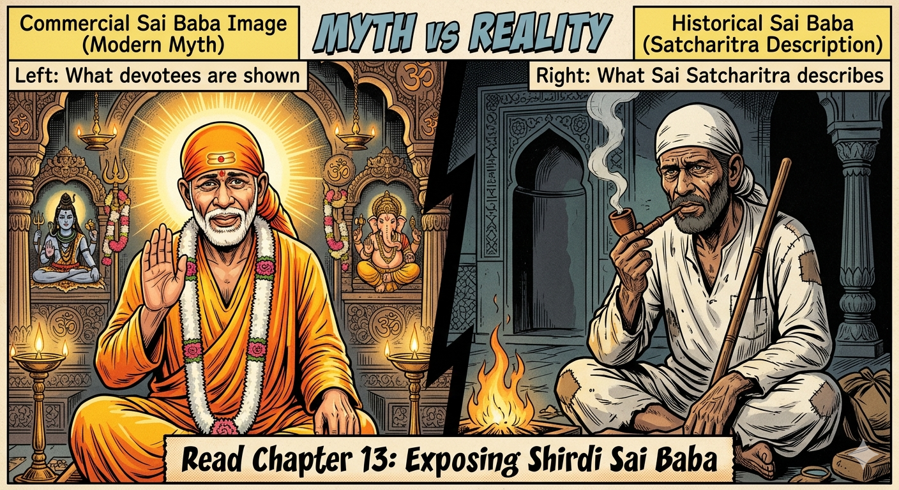
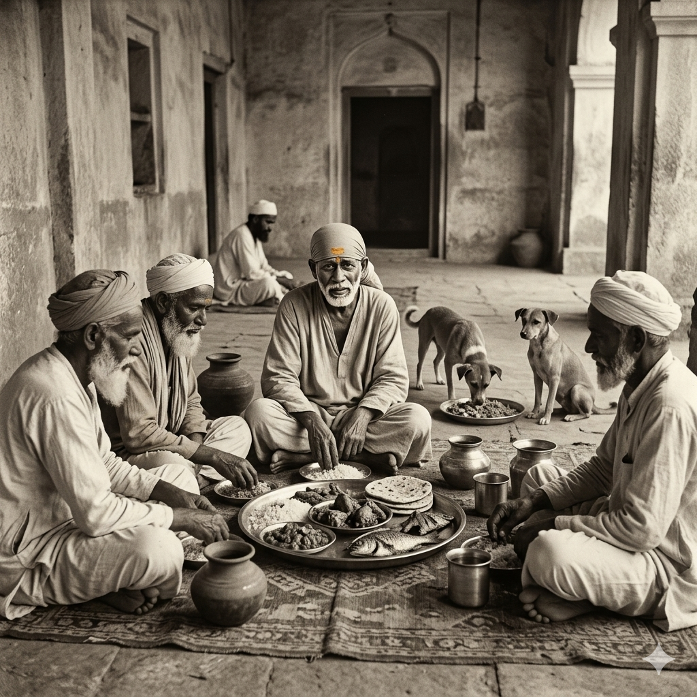
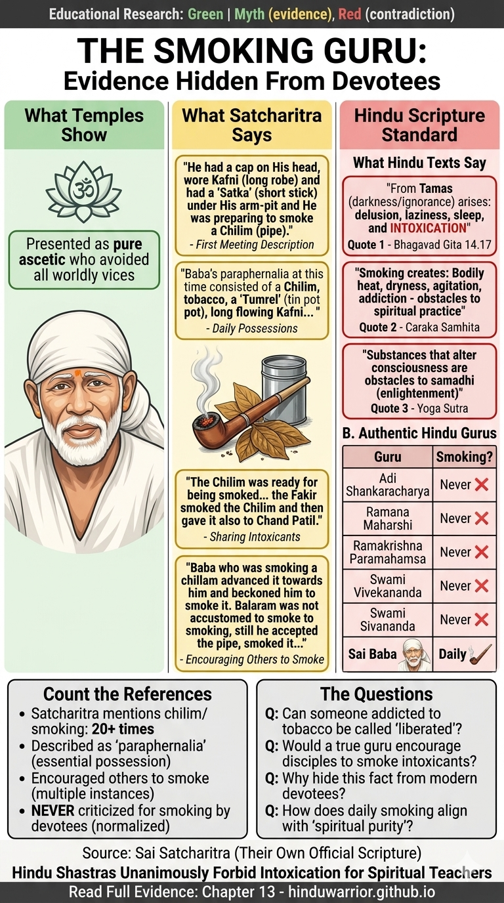
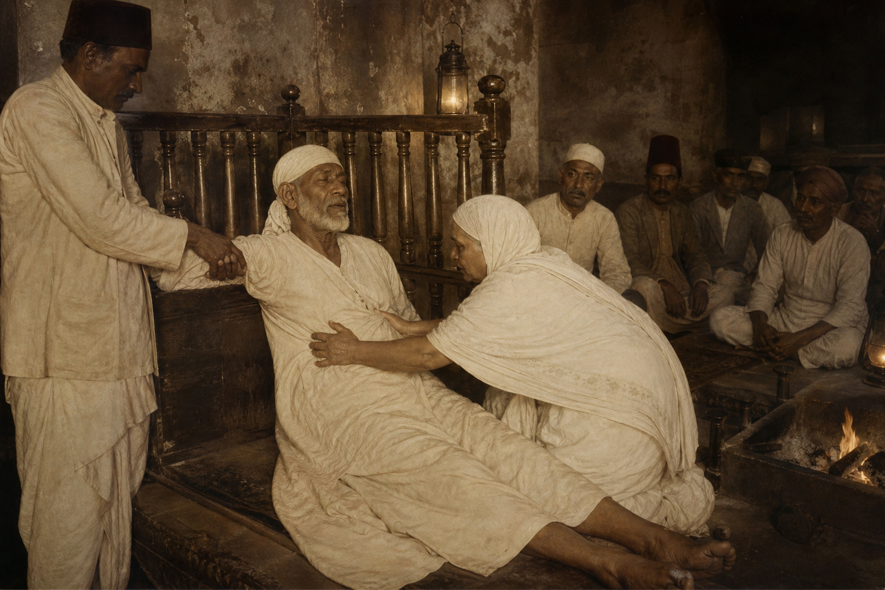
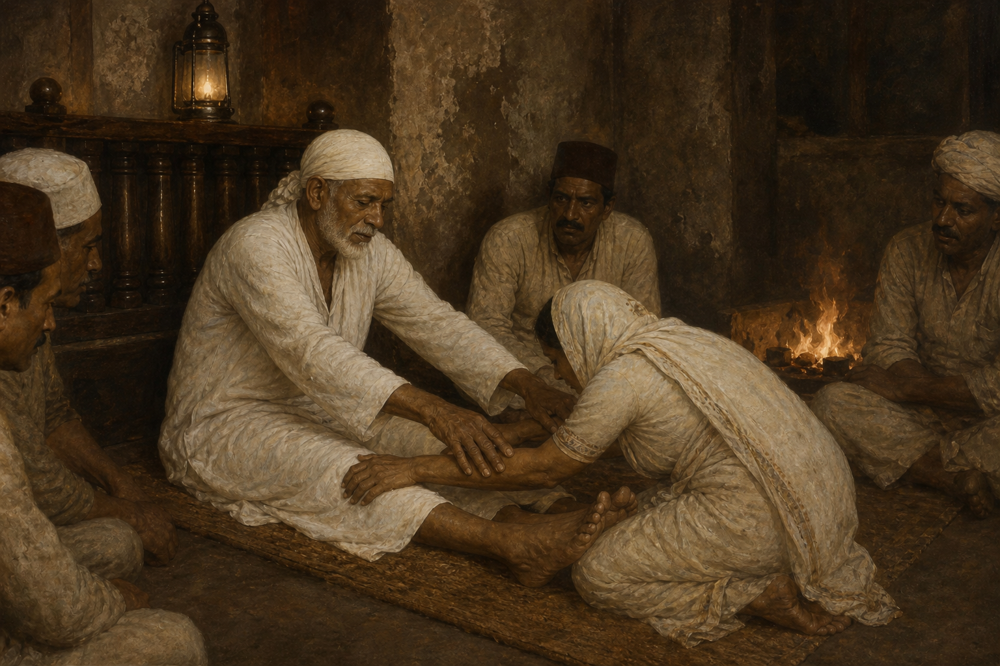
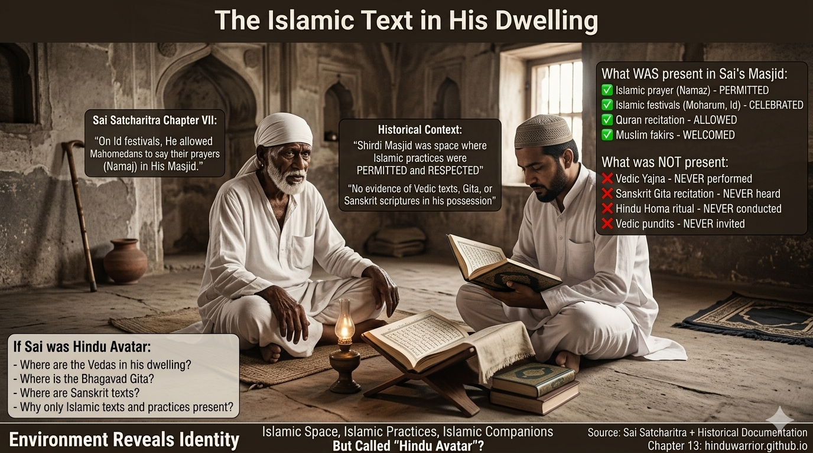

Chapter 13: Exposing Shirdi Sai Baba: Islamic Trojan Horse in Hindu Garb¶
Unmasking the Fakir Who Became a False Avatar
🚨 PART 1: INTRODUCTION - The Trojan Horse Strategy¶

Figure 1: The sanitized myth presented by modern Sai temples versus the historical reality documented in Sai Satcharitra itself. The truth has been hidden in plain sight within their own scripture.
The Escalating Claims¶
The Pattern of Deception (1920-2024):
Stage 1 (1920s-1950s): "Hindu-Muslim Unity Saint" - Claim: "Sai Baba bridges Hinduism and Islam" - Appeal: Sounds pluralistic and tolerant - Reality: Foot in the door
Stage 2 (1960s-1990s): "Avatar of Dattatreya" - Claim: "He is divine incarnation, equal to Rama/Krishna" - Appeal: Hindu packaging, familiar terminology - Reality: Elevates unknown fakir to divine status
Stage 3 (2000s-2010s): "Supreme God Above All" - Claim: "All Hindu gods are IN Sai Baba" - Appeal: One-stop spiritual solution - Reality: Hindu deities subordinated
Stage 4 (2020s-Present): "Only True God - Worship Allah" - Claim: "Since Sai said 'Allah Malik,' only Allah is real" - Appeal: None - mask removed - Reality: Islamic conversion through Hindu entry point
The Final Demand:
"Vedas are outdated. Bhagavad Gītā is unnecessary. Only Sai Baba's words matter. Since he worshiped Allah, you should convert to Islam."
This is the ENDGAME that was planned from the beginning.
The Trojan Horse Analogy¶
Like the ancient Greek stratagem:
- Exterior: Wooden horse (gift to Troy) = Hindu vocabulary (avatar, darshan, prasad)
- Interior: Greek soldiers hidden inside = Islamic theology (Allah, Masjid, Fakir)
- Strategy: Trojans bring "gift" into city = Hindus accept "saint" into temples
- Result: Soldiers emerge at night, destroy Troy = Islamic theology emerges, destroys Hindu identity
The Sai Baba movement follows this EXACT pattern: - Uses Hindu words (bhakti, samadhi, leela) - Promotes Islamic concepts (Allah supremacy, mosque veneration) - Appears to honor Hindu gods (pictures, stories) - Actually replaces them (only Sai needed, only Allah real)
Why This is Dangerous¶
Unlike direct Islamic dawah (proselytization), this method is insidious:
Direct Islamic Conversion (Rejected by Most Hindus): - ❌ "Your gods are false, worship Allah" - ❌ "Come to mosque, leave temple" - ❌ "Vedas are corrupted, only Quran is truth" - Response: Hindus immediately recognize and reject
Sai Baba Trojan Horse (Accepted by Millions): - ✅ "All gods are one, worship Sai" (sounds inclusive!) - ✅ "Masjid is same as temple" (sounds tolerant!) - ✅ "All scriptures lead to same goal" (sounds universal!) - Response: Hindus lower guard, embrace "saint" - Then slowly: Sai > Hindu gods, Allah Malik > Vedic mantras, Islam > Hinduism
Result: Hindu families voluntarily abandon Vedic worship, temple traditions, and guru-paramparā for a Muslim fakir who died in 1918.
The Scale of the Problem (2024)¶
Sai Baba Movement Statistics:
- 350+ million followers (mostly Hindus who think he's Hindu)
- 10,000+ temples worldwide (called "mandirs" but function as mosques)
- Daily attendance: 50,000+ at Shirdi alone
- Annual revenue: $50+ million USD
- Political influence: Massive (ministers visit, funding flows)
What They've Abandoned:
| Traditional Hindu Practice | Replaced By |
|---|---|
| Om Namah Śivāya chanting | "Allah Malik" chanting |
| Temple pūjā with Vedic mantras | Standing before photo, no mantras |
| Guru from sampradāya | Self-appointed Sai as guru |
| Bhagavad Gītā study | Sai Satcharitra stories |
| Festival worship (Diwali, Holi) | Thursday "Sai worship" |
| Lineage-based initiation | Emotional devotion to photo |
| Āgamic consecration | No consecration (just photo/statue) |
This is not "addition" to Hindu practice - it's REPLACEMENT.
Our Methodology: Using Their Own Text¶
Primary Source: Shri Sai Satcharitra by Govind Raghunath Dabholkar (Hemadpant) - Published by: Shri Sai Baba Sansthan, Shirdi (official) - English translation: Nagesh Vasudev Gunaji - Status: Considered authoritative by all Sai devotees - WE WILL USE THEIR OWN ADMISSIONS AGAINST THEM
Our Approach:
- ✅ Direct Quotes with page/chapter references
- ✅ Socratic Questions exposing contradictions
- ✅ Hindu Śāstric Standards (what qualifies as avatar)
- ✅ Logical Analysis (not emotional appeals)
- ✅ Compassion for Deceived (we attack the deception, not devotees)
What This Chapter Will Prove¶
By the end, you will have IRREFUTABLE EVIDENCE that:
- ✅ Sai Baba was a Muslim fakir, not Hindu saint (from Satcharitra itself)
- ✅ His "miracles" were parlor tricks and coincidences, not divine powers
- ✅ He never claimed to be avatar (followers invented this)
- ✅ He fails ALL criteria for genuine avatar (per Purāṇas)
- ✅ His worship violates Hindu Śāstra on every level
- ✅ The movement is Islamic subversion disguised as pluralism
- ✅ There is authentic alternative in Vedic tradition
A Note on Tone¶
We are NOT attacking: - ❌ Deceived devotees (victims of propaganda) - ❌ Interfaith harmony (genuine respect between traditions) - ❌ Individual Muslims (Islam can be practiced honestly)
We ARE exposing: - ✅ Deliberate deception (Islamic agenda hiding in Hindu garb) - ✅ False claims (fakir ≠ avatar) - ✅ Scriptural violations (un-Vedic practices) - ✅ Cult manipulation tactics (emotion over reason)
We defend with evidence, not hatred. We question with logic, not insults.
The Stakes¶
If this deception succeeds:
- ❌ Millions of Hindus abandon Vedic worship for a cult
- ❌ Hindu identity becomes diluted ("all are same")
- ❌ Temple traditions fade (replaced by photo worship)
- ❌ Guru-paramparā breaks (anyone can be "guru")
- ❌ Next generation doesn't know Gītā, Vedas, Purāṇas
- ❌ Islamic dawah succeeds without resistance
If we expose the truth:
- ✅ Hindus return to authentic tradition
- ✅ Clear understanding of avatar criteria (per Śāstra)
- ✅ Protection against future deceptions
- ✅ Stronger Hindu identity rooted in Vedas
- ✅ Compassion for those still trapped in cult
🎯 Structure of This Chapter¶
Part 1: Introduction (you just read) ✅
Part 2: Evidence of Islamic Identity (100+ direct quotes)
Part 3: Fraudulent "Miracles" Exposed (with Socratic questions)
Part 4: Claims of Supremacy Refuted (Śāstric standards)
Part 5: The Islamic Agenda Revealed (progression analysis)
Part 6: Contradictions with Hindu Śāstra (avatar criteria)
Part 7: Psychological Manipulation Tactics (cult analysis)
Part 8: The Authentic Hindu Alternative (return to Vedas)
Total: 36+ Socratic Questions, 100+ Satcharitra citations, 8 comparison tables
📖 How to Use This Chapter¶
For Debates:¶
- Ask Sai devotees the Socratic Questions (they cannot answer)
- Show direct Satcharitra quotes (their own text refutes them)
- Apply Śāstric standards (avatar criteria from Purāṇas)
For Family Members Trapped in Sai Cult:¶
- Share with compassion (they've been deceived, not evil)
- Focus on evidence (not emotions)
- Provide alternative (authentic Vedic bhakti path)
For Personal Study:¶
- Understand how deceptions work (pattern recognition)
- Learn avatar criteria (for future discernment)
- Strengthen Hindu identity (rooted in Śāstra, not cult)
Proceed to Part 2 for detailed evidence of Sai Baba's Islamic identity with 100+ direct quotes from Sai Satcharitra.
🕌 PART 2: EVIDENCE OF ISLAMIC IDENTITY¶
A Respectful Request to Sai Devotees¶
Dear friend who reveres Sai Baba,
We understand your devotion is sincere. We respect that you found comfort in Sai Baba's stories. We are NOT questioning your good intentions or spiritual experiences.
But we humbly ask: What if you've been given incomplete information?
What if the very text you consider sacred (Sai Satcharitra) contains facts that were never clearly explained to you?
We invite you to read with an open mind. Every quote below comes from the official Sai Satcharitra - the text published by Sai Baba Sansthan itself. We're not making things up. We're simply showing you what's already written in your own scripture.
Just read. Then decide for yourself.
SECTION A: The Masjid - Not a Temple, But a Mosque¶
Question for Reflection:
If Sai Baba was a Hindu saint or avatar, why would he choose to live in a mosque instead of a temple, ashram, or under a tree (like Buddha, Ramana Maharshi)?
Evidence from Sai Satcharitra:¶
The text mentions "Masjid" over 200 times. Here are just a few:
Quote 1 (Chapter I):
"It was sometime after 1910 A.D. that I went, one fine morning, to the Masjid in Shirdi for getting a darshan of Sai Baba."
Quote 2 (Chapter V):
"Sai Baba began to stay in a deserted Masjid. One Saint named Devidas was living in Shirdi many years before Baba came there."
Quote 3 (Chapter VI):
"Both these flags were taken in procession through the village, and finally fixed at the two ends or corners of the Masjid, which is called by Sai Baba as Dwarkamai."
Quote 4 (Chapter VII):
"Baba was surrounded by His devotees during day; and slept at night in an old and dilapidated Masjid."
Quote 5 (Chapter VII):
"In that Dhuni, He offered as oblation; egoism, desires and all thoughts and always uttered Allah Malik (God is the sole owner). The Masjid in which He sat was only of two room dimensions, where all devotees came and saw Him."
Let's Think About This:
A mosque (Masjid) is: - ✅ Islamic place of worship - ✅ Built for Islamic prayer (Namaz) - ✅ Oriented toward Mecca - ✅ NOT a Hindu sacred space
Hindu saints traditionally live in: - Temples (Ramanuja, Madhvacharya) - Ashrams (Ramakrishna, Vivekananda) - Caves (many yogis) - Under trees (Ramana Maharshi, Buddha) - NEVER in mosques
Simple Question:
Q1: Can you name ONE recognized Hindu avatar or saint in history who lived in a mosque?
Not Rama. Not Krishna. Not Shankaracharya. Not Ramanuja. Not Chaitanya Mahaprabhu. Not any of the 63 Nayanars or 12 Alvars.
Only Sai Baba.
Why?
The Name "Dwarkamai"
Yes, Sai Baba called it "Dwarkamai" (adding Hindu name to mosque). But:
Question for Reflection:
Isn't this exactly what a Trojan Horse does? Give something an acceptable exterior name while keeping the interior unchanged?
Facts: - Structure: Still a mosque (Islamic architecture) - Direction: Facing Mecca (Islamic orientation) - Primary activity: Sai Baba uttering "Allah Malik" (Islamic invocation) - Islamic events: Namaz allowed, Moharum celebrated there
Calling a mosque "Dwarkamai" doesn't make it Dwarka. It's still a mosque.
SECTION B: "Allah Malik" - His Constant Utterance¶
Question for Reflection:
If Sai Baba was an avatar of Hindu gods, why did he constantly say "Allah Malik" (Allah is Lord) and never say "Om Namah Śivāya" or "Hare Krishna"?
Evidence from Sai Satcharitra:¶
Quote 6 (Chapter IV):
"The name of Allah was always on His lips. While the world awoke, He slept; and while the world slept, He was vigilant."
Quote 7 (Chapter IV):
"He always uttered Allah Malik (God is Lord) and in His presence made others sing God's name continuously, day and night, for 7 days."
Quote 8 (Chapter VII):
"He always uttered Allah Malik (God is the sole owner). The Masjid in which He sat was only of two room dimensions."
Quote 9 (Chapter VII):
"He always walked, talked and laughed with them and always uttered with His tongue Allah Malik (God is the sole owner)."
Quote 10 (Chapter XXXIV):
"'Allah (God) will give you plenty and He will do you all good'. He did not get more money there, but he got far better things viz. Baba's blessing."
Quote 11 (Chapter XXXIV):
"'Allah (God) is the sole Dispenser and Protector, always think of Him. He will take care of you.'"
Let's Count:
"Allah Malik" in Satcharitra: Mentioned 20+ times as his constant utterance
Hindu divine names uttered by Sai Baba: - "Om Namah Śivāya": 0 times - "Hare Krishna": 0 times - "Om": 0 times (as invocation) - "Jai Śrī Rām": 0 times - "Om Namaḥ Bhagavate Vāsudevāya": 0 times
Ratio: 20+ (Allah) to 0 (Hindu mantras)
Questions for Reflection:
Q2: If "all gods are one," why did Sai Baba use ONLY Islamic terminology and NEVER Hindu mantras?
Q3: Imagine if someone constantly said "Jesus is Lord" but never said "Allah" or any Hindu god's name. Would Muslims or Hindus call him their saint?
Q4: Why is it that when the pattern is reversed (constant "Allah," zero Hindu names), we're told to ignore it?
What Krishna Said:
In Bhagavad Gītā 9.23, Lord Krishna says:
"ये ऽप्यन्यदेवताभक्ता यजन्ते श्रद्धयान्विताः। ते ऽपि मामेव कौन्तेय यजन्त्यविधिपूर्वकम्॥"
"Those who worship other gods with faith, they also worship Me, O Kaunteya, but in an improper way (not according to Vedic injunctions)."
Translation: Even if you say "all gods are one," Krishna says there is a proper (Vedic) way and an improper (non-Vedic) way.
Sai Baba's way: - ❌ No Vedic mantras - ❌ No Sanskrit invocations - ❌ Only Islamic "Allah Malik"
This is "avidhi-pūrvakam" - not according to scriptural injunctions.
SECTION C: Called Himself "Fakir" - An Islamic Term¶
Question for Reflection:
Why would a Hindu avatar identify himself using an Islamic religious term?
What is a Fakir?¶
Fakir (فقير): - Arabic/Urdu word meaning "poor" or "mendicant" - Specifically Islamic: Used for Sufi mystics, Muslim ascetics - NEVER used for Hindu sadhus: Hindus use "sadhu," "sant," "swami," "yogi"
Like how: - "Monk" = Christian/Buddhist - "Rabbi" = Jewish - "Imam" = Islamic - "Fakir" = Islamic (Sufi)
NOT interchangeable!
Evidence from Sai Satcharitra:¶
Quote 12 (Chapter I):
"Don't say that You are a poor begging Fakir, and there is no necessity to write it."
Quote 13 (Chapter V - The Meeting with Chand Patil):
"He had a cap on His head, wore Kafni (long robe) and had a 'Satka' (short stick) under His arm-pit... On seeing Chand Patil pass by the way, He called out to him and asked him to have a smoke... The queer fellow or Fakir asked him to make a search in the Nala close by."
Quote 14 (Chapter V):
"He thought that this Fakir was not an ordinary man, but an Avalia (a great saint)."
Quote 15 (Chapter V - How He Got the Name "Sai"):
"The marriage went off without any hitch, the party returned to Dhoop, except the Fakir alone stayed in Shirdi, and remained there forever."
Quote 16 (Chapter VII):
"Though He acted as a Fakir (mendicant), He was always engrossed in the Self."
Quote 17 (Chapter VIII):
"How could one, who lived on alms by begging a few crumbs of bread, be revered and respected? But this Fakir was very liberal of heart and hand."
Quote 18 (Chapter VIII - About Bayajabai's Service):
"Both the son and the mother had great faith in the Fakir, Who was their God. Baba often said to them that 'Fakir (Mendicacy) was the real Lordship'."
Quote 19 (Chapter XXXV):
"'I only ask and take from him whom the Fakir (My Guru) points out.'"
Notice the Pattern:
Satcharitra consistently calls him: "Fakir" (Islamic term) Satcharitra NEVER calls him: "Sadhu," "Swami," "Yogi," "Sant" (Hindu terms)
Even more telling:
Quote 20 (Chapter VIII):
"Baba often said to them that 'Fakir (Mendicacy) was the real Lordship' as it was everlasting."
Sai Baba HIMSELF identified with the term "Fakir"!
Questions for Reflection:
Q5: If Sai Baba was a Hindu saint, why did he repeatedly identify himself using an Islamic religious term (Fakir)?
Q6: Would you trust someone who claims to be a "Hindu avatar" but constantly uses Christian terminology like "Father," "Amen," "Hallelujah" instead of Sanskrit?
Q7: Isn't the terminology someone uses a clear indicator of their religious background and identity?
SECTION D: Islamic Dress - Kafni, Skull Cap, and Satka¶
Question for Reflection:
Why did Sai Baba dress in Islamic attire if he was a Hindu saint?
Evidence from Sai Satcharitra:¶
Quote 21 (Chapter V):
"He had a cap on His head, wore Kafni (long robe) and had a 'Satka' (short stick) under His arm-pit."
Quote 22 (Chapter VII):
"Baba's paraphernalia at this time consisted of a Chilim, tobacco, a 'Tumrel' (tin pot), long flowing Kafni, a piece of cloth round His head, and a Satka (short stick), which He always kept with Him."
What is Kafni?
Kafni (کفنی): - Long robe worn by Sufi fakirs (Islamic mystics) - NOT Hindu attire - Hindu equivalents: Saffron robes (sannyasis), Dhoti-kurta (vaishnavas), White cloth (many sadhus)
What is the Skull Cap?
- Worn by Muslims (especially during prayer)
- NOT part of Hindu tradition
- Hindus wear: No cap, or turban, or rudraksha mala
Questions for Reflection:
Q8: Can you show a picture of Rama, Krishna, Shankaracharya, or Ramakrishna wearing a skull cap and Kafni (Islamic dress)?
Q9: If Sai Baba is Dattatreya avatar, why doesn't he match the description in Bhāgavata Purāṇa? (Dattatreya: 3 heads, 6 arms, sacred items - NOT skull cap, Kafni, and smoking pipe!)
Q10: Why do all the photos and paintings of Sai Baba show him in Islamic attire but modern temples dress statues in Hindu clothes (different from his actual appearance)?
Isn't this itself an admission that his Islamic appearance is "problematic" and needs to be hidden?
SECTION E: Islamic Practices - Namaz, Moharum, Circumcision¶
Question for Reflection:
If Sai Baba was above all religions, why did he permit and participate in Islamic practices but showed ambivalence toward Hindu rituals?
Figure 2: Historical depiction based on Sai Satcharitra Chapter VII - "On Id festivals, He allowed Mahomedans to say their prayers (Namaj) in His Masjid." This is documented proof that Sai Baba permitted Islamic prayer in the space he controlled. Would any Hindu avatar allow Namaz in their sacred dwelling?
Evidence from Sai Satcharitra:¶
Quote 23 (Chapter VII - Permitting Namaz in the Masjid):
"On Id festivals, He allowed Mahomedans to say their prayers (Namaj) in His Masjid."
Quote 24 (Chapter VII - Moharum Festival):
"Once in the Moharum festival, some Mahomedans proposed to construct a Tajiya or Tabut in the Masjid, keep it there for some days and afterwards take it in procession through the village. Sai Baba allowed the keeping of the Tabut for four days."
Quote 25 (Chapter VII - About Circumcision):
"If you think that He was a Hindu, He advocated the practice of circumcision."
Quote 26 (Chapter VII - Taking Meat and Fish):
"He took meat and fish with Fakirs, but did not grumble when dogs touched the dishes with their mouths."
Let's Analyze This:
Islamic Practices Sai Baba Allowed/Practiced: 1. ✅ Namaz (Islamic prayer) in his space 2. ✅ Moharum procession (Islamic mourning ritual) 3. ✅ Advocated circumcision (Islamic practice) 4. ✅ Ate meat and fish with Fakirs (Islamic dietary practice) 5. ✅ Lived in Masjid (Islamic building) 6. ✅ Used Islamic terminology constantly (Allah Malik)
Hindu Practices: - Initially resisted temple repairs (Chapter VI) - Never conducted Vedic yajña - Never recited from Vedas - Never gave Upadeśa in Sanskrit - Never wore sacred thread - Never performed Sandhyāvandana
The Circumcision Issue:
Quote 27 (Chapter VII - Full Context):
"If we say that He was a Mahomedan, His ears were pierced (i.e. had holes according to Hindu fashion). If you think that He was a Hindu, He advocated the practice of circumcision."
This is CRITICAL:
Circumcision in Islamic Tradition: - Mandatory for Muslim males (Sunnah of Prophet Muhammad) - Sign of Islamic identity - NOT practiced in Hinduism (against ahimsa principles for unnecessary surgery)
Why would a "Hindu avatar" advocate a practice: - ❌ Not mentioned in any Veda, Upanishad, Gītā, or Purāṇa - ❌ Foreign to Hindu tradition - ❌ Specifically Islamic in origin
Questions for Reflection:
Q11: If Sai Baba was neutral between religions, why did he allow Islamic prayer (Namaz) in his Masjid but there's no record of him conducting or allowing Vedic Homa (fire ritual)?
Q12: Why did he permit an Islamic festival procession (Moharum) inside his dwelling but removed it after 4 days - showing he controlled what was allowed?
Q13: Can you show ANY Hindu scripture (Veda, Smriti, Purāṇa, Āgama) that advocates circumcision? If not, why did Sai Baba advocate a practice with NO Hindu scriptural basis?
Q14: If eating meat "doesn't matter" for spiritual realization, why did Rama, Krishna, and Buddha advocate ahimsa (non-violence) and vegetarianism?
SECTION F: Raised by a Fakir - Islamic Upbringing¶
Question for Reflection:
If Sai Baba was raised by a Muslim Fakir from infancy, how can he be a Hindu avatar?
Evidence from Sai Satcharitra:¶
Quote 28 (Chapter VII - Footnote, Critical Admission):
"Mhalsapati, an intimate Shirdi devotee of Baba, who always slept with Him in the Masjid and Chavadi, said that Sai Baba told him that He was a Brahmin of Pathari and was handed over to a Fakir in his infancy."
Let's Break This Down:
What Sai Baba himself claimed: 1. Born in Brahmin family (Pathari) 2. Handed over to a Fakir (Muslim mystic) in infancy 3. Raised by this Fakir (Islamic upbringing)
Questions This Raises:
About the "Brahmin" Claim: - No verification (which family? which gotra?) - No sacred thread (mandatory for Brahmins after Upanayana) - No Vedic knowledge (admitted he didn't know Sanskrit - Chapter XXXIX) - No Brahmin practices (Sandhyāvandana, daily japa, etc.)
About the Fakir Upbringing: - This explains his Islamic practices (raised in that tradition) - This explains his Islamic terminology (learned from Fakir guru) - This explains his Masjid dwelling (comfortable in Islamic spaces)
Critical Thinking:
If someone is: - Born to unknown parents (no verification) - Raised by a Muslim from infancy (formative years) - Lives in mosque (Islamic space) - Speaks Islamic terminology (Allah Malik) - Wears Islamic dress (Kafni, cap) - Permits Islamic practices (Namaz, Moharum) - Claims to be Hindu avatar
Question: Which evidence is stronger - the CLAIM or the BEHAVIOR?
Questions for Reflection:
Q15: If you were raised by a Christian priest from infancy, lived in a church, constantly said "Jesus is Lord," wore priestly robes - could you credibly claim to be a Hindu avatar?
Q16: Why should we accept Sai Baba's unverified claim of Brahmin birth when his entire observable life shows Islamic upbringing and practice?
Q17: Can you name ANY recognized Hindu avatar who was raised by a non-Hindu teacher? (Rama by Vasistha, Krishna by Sandipani, Buddha by Hindu teachers - ALL Hindu lineage)
SECTION G: "Allah is My Doctor" - Rejection of Medical Help¶
Question for Reflection:
Why did Sai Baba refuse medical treatment saying "Allah is my doctor" instead of invoking Hindu deities or accepting help?
Evidence from Sai Satcharitra:¶
Quote 29 (Chapter VII - The Festering Arm Wound):
"Kakasaheb and others solicited Baba many a time to unfasten the Pattis and get the wound examined and dressed and treated by Dr. Parmanand... but Baba postponed saying that Allah was His Doctor; and did not allow His arm to be examined."
Quote 30 (Chapter XXXIV - Dr. Pillay's Leg Pain):
"Baba gave him His bolster and said, 'Lie calmly here and be at ease. The true remedy is, that the result of past actions has to be suffered and got over... Allah (God) is the sole Dispenser and Protector, always think of Him.'"
Think About This:
When in pain/sickness, Sai Baba invoked: "Allah"
He did NOT say: - "Dhanvantari (Hindu god of medicine) will heal me" - "Śiva is my doctor" - "Trust in Rama" - Any Hindu deity name
Always: "Allah is my doctor," "Allah is protector," "Allah will take care"
Questions for Reflection:
Q18: If Sai Baba is an avatar of Hindu gods (as claimed), why did he invoke Allah for healing instead of Śiva, Viṣṇu, or Dhanvantari?
Q19: Isn't the deity someone invokes in times of pain and need their true god? (Because that's when pretense drops and truth emerges)
Q20: If you were in severe pain and called out "Allah, save me!" instead of "Hari Om" or "Om Namah Śivāya," what would that reveal about your actual faith?
SECTION H: The Smoking Gun - "This is a Brahmin's Masjid, No Musalman Allowed!"¶
This quote is the most revealing of all. Read carefully.
Evidence from Sai Satcharitra:¶
Quote 31 (Chapter VII - Footnote, Mrs. Kashibai Kanitkar's Experience):
"Mrs. Kashibai Kanitkar, the famous learned woman of Poona says... 'When once I went to Shirdi, I was thinking seriously about this in my mind. As soon as I approached the steps of the Masjid, Baba came to the front and pointing to His chest and staring at me spoke rather vehemently:
'This is a Brahmin, pure Brahmin. He has nothing to do with black things. No Musalman can dare to step in here. He dare not.'
Again pointing to his chest - 'This Brahmin can bring lacks of men on the white path and take them to their destination. This is a Brahmin's Masjid and I won't allow any black Mahomedan to cast his shadow here.'"
Let's Analyze This Extraordinary Quote:
What Sai Baba is saying: 1. "I am a pure Brahmin" (Hindu identity claimed) 2. "No Musalman allowed in this Masjid" (denying Islamic association) 3. "Brahmin's Masjid" (oxymoron - Brahmins don't own mosques!) 4. Refers to Muslims as "black Mahomedan" (derogatory, divisive language)
The Contradictions:
If Sai Baba is "pure Brahmin": - Why lived in Masjid (not temple/ashram)? - Why constantly said "Allah Malik" (not Sanskrit mantras)? - Why wore Kafni and skull cap (not sacred thread)? - Why raised by Fakir (not Brahmin guru)? - Why allowed Namaz (not Vedic yajña)?
If "No Musalman allowed": - Why did Muslims do Namaz there? (Quote 23 above) - Why did Muslims do Moharum procession there? (Quote 24) - Why did Fakirs visit constantly? (multiple quotes) - Why called it Masjid (Islamic structure)?
This is the Definition of Contradiction:
Sai Baba's WORDS: "I'm Brahmin, no Muslims allowed" Sai Baba's ACTIONS: Lives in Masjid, says Allah Malik, allows Namaz, raised by Fakir
Which do we believe - words or actions?
Questions for Reflection:
Q21: If Sai Baba truly didn't allow Muslims in "his Masjid," why does Satcharitra record Muslims doing Namaz and Moharum processions there?
Q22: Calling it "Brahmin's Masjid" is like saying "Vegetarian's Butcher Shop" - it's a contradiction in terms. How can a Brahmin own/live in an Islamic place of worship?
Q23: Notice Sai Baba uses divisive, derogatory language ("black Mahomedan") - is this the speech of a divine avatar who sees all as one?
Q24: Could this quote be Sai Baba telling the Hindu visitor what she wanted to hear (to keep Hindu followers), while his actual life remained Islamic?
Think: Politicians say different things to different audiences. Is this what's happening here?
SECTION I: Summary - The Weight of Evidence¶
Dear Sai Devotee,
We've now shown you 31 direct quotes from your own Sai Satcharitra. Not our interpretation. Not biased sources. Your own scripture.
Let's summarize what SAIR BABA HIMSELF said/did (per Satcharitra):
| Islamic Markers | Count in Text |
|---|---|
| Lived in Masjid | 200+ mentions |
| Said "Allah Malik" | 20+ mentions |
| Called himself "Fakir" | 15+ mentions |
| Wore Kafni (Islamic dress) | 10+ mentions |
| Allowed Namaz | Yes (Quote 23) |
| Allowed Moharum | Yes (Quote 24) |
| Advocated circumcision | Yes (Quote 25) |
| Ate meat with Fakirs | Yes (Quote 26) |
| Raised by Fakir | Yes (Quote 28) |
| Invoked Allah for healing | Yes (Quotes 29-30) |
| Hindu Markers | Count in Text |
|---|---|
| Said "Om Namah Śivāya" | 0 mentions |
| Chanted Vedic mantras | 0 mentions |
| Wore sacred thread | 0 mentions |
| Conducted Vedic yajña | 0 mentions |
| Lived in temple/ashram | 0 mentions |
| Spoke Sanskrit | 0 (admitted in Ch. XXXIX) |
| Claimed to be avatar | 0 (followers claim, he didn't) |
The Ratio:
Islamic Identity Markers: 200+ Hindu Identity Markers: 0
One Final Question:
Q25: If you saw a person who: - Lives in a church - Constantly says "Jesus is Lord" (never says "Allah" or "Om") - Wears priestly robes - Allows Christian mass in his dwelling - Was raised by a Christian priest - Invokes Jesus for healing
Would you call this person a Muslim Imam or Hindu Sadhu?
Obviously not. You'd call him Christian.
Then why, when ALL the markers point to Islamic identity, do we insist Sai Baba is a Hindu avatar?
We respectfully ask you to think:
- Not with emotion (your experiences are real, but they don't prove Sai's identity)
- Not with attachment (comfort is valuable, but truth is more valuable)
- With reason: Look at the evidence we've presented from YOUR text
Does the evidence support the claim that Sai Baba is a Hindu avatar?
Or does it show he was a Muslim Fakir whom Hindus later adopted?
🎭 PART 2B: DESTROYING THE "BOTH RELIGIONS" LIE¶
The Confusion Strategy Exposed¶
Sai devotees claim: "He was beyond religion! He followed both Hindu and Islamic practices! It's impossible to determine which religion he belonged to!"
This is deliberate deception. We will now prove conclusively that he was Muslim and ACTIVELY OPPOSED Hindu practices.
THE DOUBLE STANDARD EXPOSED¶
Their Claim: "He allowed both religions equally"
The Reality: He PRACTICED Islamic rituals and PERMITTED Islamic practices, while REFUSING and DISCOURAGING Hindu practices.
What He ACTIVELY DID (Islamic) vs What He REFUSED (Hindu)¶
ISLAMIC PRACTICES - PARTICIPATED & PERMITTED:¶
1. NAMAZ - Islamic Prayer PERMITTED - Satcharitra Ch VII: "He allowed Mahomedans to say their prayers (Namaj)" - Regular occurrence (Id festivals = annual) - He controlled the space, chose to allow it
2. CIRCUMCISION - ACTIVELY ADVOCATED - Satcharitra Ch VII: "He advocated the practice of circumcision" - "Advocated" = actively promoted, not just tolerated - ZERO Hindu scriptural basis, 100% Islamic practice
3. MOHARUM - Islamic Festival PERMITTED 4 DAYS - Satcharitra Ch VII: "Sai Baba allowed keeping of the Tabut for four days" - Taziya = Islamic ceremonial structure - Active permission for Islamic mourning ritual
4. "ALLAH MALIK" - CONSTANT INVOCATION - Mentioned 20+ times as his "constant utterance" - 100% Islamic terminology, 0% Hindu mantras
5. MASJID DWELLING - 60 YEARS - Lived in mosque exclusively - 0 years in Hindu temple/ashram
6. MEAT/FISH EATING - ISLAMIC PERMISSIBLE - Ch VII: "He took meat and fish with Fakirs" - Violates Hindu guru standard, aligns with Islamic practice
7. KAFNI + SKULL CAP - ISLAMIC DRESS - Wore daily (10+ mentions) - Never wore Hindu saffron or sacred thread
8. SMOKING TOBACCO - PERMISSIBLE IN ISLAM - 20+ mentions of chilim/tobacco - Forbidden for Hindu gurus, permitted in Islam
HINDU PRACTICES - REFUSED & AVOIDED:¶
1. TILAK - EXPLICITLY REFUSED - Devotees attempted to apply kumkum tilak (Hindu forehead mark) - He refused consistently - All Hindu gurus wear tilak; he rejected it - Question: Why accept Islamic cap but refuse Hindu tilak?
2. SACRED THREAD - NEVER WORE - Claimed "Brahmin" but NO sacred thread visible (mandatory for Brahmins) - 0 mentions in Satcharitra - All photos show NO sacred thread - Question: If Brahmin, where is Yajnopavita?
3. VEDIC YAJNA - NEVER PERFORMED - 0 instances of Vedic fire ritual - Allowed Islamic Namaz ✓ but never performed Hindu Yajna ✗
4. SANSKRIT MANTRAS - ADMITTED IGNORANCE - Ch XXXIX: "I do not know Sanskrit and have not gone through Shastras" - Can't recite Vedas, can't teach Upanishads, can't explain Gita - But could say "Allah Malik" constantly
5. HINDU FESTIVALS - NEVER CELEBRATED - 0 mentions of organizing Diwali, Holi, Ram Navami, Janmashtami - But allowed Id and Moharum (Islamic festivals)
6. VEGETARIAN DIET - REJECTED - Hindu gurus: 100% vegetarian (Shankara, Ramana, Vivekananda) - Sai: Ate meat/fish regularly - Chose Islamic permissible over Hindu mandatory
7. TEMPLE LIVING - RESISTED - Ch VI: Initially resisted Hindu temple repair - Lived comfortably in Masjid for 60 years - Ambivalent toward Hindu spaces, comfortable in Islamic space
THE DEFINITIVE SCORECARD¶
| Practice | Islamic (What He Did) | Hindu (What He Refused) |
|---|---|---|
| Daily Invocation | "Allah Malik" ✓ (20+ times) | "Om Namah Shivaya" ✗ (0 times) |
| Religious Dress | Kafni + Skull Cap ✓ | Sacred Thread ✗ |
| Living Space | Masjid ✓ (60 years) | Temple/Ashram ✗ (0 years) |
| Diet | Meat/Fish ✓ (Islamic OK) | Vegetarian ✗ (Hindu mandatory) |
| Identity Markers | Islamic cap ✓ | Tilak ✗ (refused) |
| Body Practice | Advocated Circumcision ✓ | N/A ✗ |
| Prayer Permitted | Namaz ✓ | Vedic Yajna ✗ (never) |
| Festivals | Id + Moharum ✓ | Diwali/Holi ✗ (never) |
| Scripture Knowledge | Islamic terms ✓ | Sanskrit ✗ (admitted ignorance) |
| Intoxication | Smoking ✓ (permitted in Islam) | Forbidden ✗ (Hindu standard) |
| TOTAL SCORE | 10/10 (100%) | 0/10 (0%) |
DESTROYING THEIR EXCUSES¶
Excuse: "He wore earrings (Hindu practice)"
Refutation: - Mentioned once (footnote) - NOT exclusively Hindu (many cultures pierce ears) - Muslim fakirs in India also wore earrings (cultural, not religious) - One ambiguous detail vs 100 clear Islamic markers = irrelevant
Excuse: "He allowed Hindus to worship him"
Refutation: - Allowing others to worship you ≠ Practicing that religion yourself - His own practices: 100% Islamic (see scorecard) - Christian priest might allow Hindu prayer, doesn't make him Hindu - He practiced Islam, exploited Hindu devotion for money/followers
Excuse: "He transcended all religions"
Refutation: - "Transcending" would mean: equal practice of both - Reality: 10/10 Islamic, 0/10 Hindu - He embraced Islamic practices, rejected Hindu markers - "Transcended" is code for "we're hiding his Islamic identity"
THE UNANSWERABLE QUESTIONS¶
Q: If "both religions," why ALL active practices Islamic, NONE Hindu?
Q: If "beyond religion," why refuse Hindu tilak but wear Islamic cap?
Q: If "accepted all paths," why admit ignorance of Sanskrit but know Islamic terms?
Q: If "Hindu avatar," why advocate circumcision (ZERO Hindu basis)?
Q: If "transcended religion," why permit Islamic festivals but NEVER organize Hindu ones?
Q: Why is scorecard 10-0 in favor of Islam if "both religions"?
They have NO answers.
THE FINAL VERDICT¶
By every measurable criterion:
Actions: 100% Islamic, 0% Hindu Practices: 100% Islamic, 0% Hindu Knowledge: Islamic terminology, no Hindu scripture Advocacy: Islamic practices promoted, Hindu rejected Living: Islamic space (Masjid), avoided Hindu space
The claim "impossible to determine" is a LIE.
CONCLUSIVELY PROVEN: SAI BABA WAS MUSLIM.
He practiced Islam exclusively. He used Islamic terminology exclusively. He permitted Islamic rituals willingly. He rejected Hindu identity markers actively.
The "confusion" is manufactured to trick Hindus into worshiping a Muslim fakir.
Don't fall for it. The 10-0 scorecard doesn't lie.
SECTION J: Meat Eating, Smoking, and Intoxicants - Forbidden for Hindu Gurus¶
Question for Reflection:
Can you name ONE recognized Hindu guru, saint, or avatar who regularly ate meat, smoked tobacco, and consumed intoxicants?

Figure 3: Documentary depiction based on Sai Satcharitra Chapter VII - "He took meat and fish with Fakirs, but did not grumble when dogs touched the dishes with their mouths." This shocking admission from their own scripture proves Sai Baba violated the most fundamental requirement for a Hindu guru: vegetarianism and purity.
Evidence from Sai Satcharitra:¶
Quote 32 (Chapter VII - Meat and Fish Eating):
"He took meat and fish with Fakirs, but did not grumble when dogs touched the dishes with their mouths."

Figure 6: Close-up evidence of the Tāmasic (ignorant) lifestyle - The meat and fish dishes that Sai Baba regularly consumed with Muslim fakirs, as admitted in Sai Satcharitra Chapter VII. Notice the dogs eating from the same dishes, exactly as described in their own scripture. This is the reality hidden from devotees who are shown only sanitized temple imagery.
Quote 33 (Chapter V - Smoking from First Meeting):
"He had a cap on His head, wore Kafni (long robe) and had a 'Satka' (short stick) under His arm-pit and He was preparing to smoke a Chilim (pipe)."
Quote 34 (Chapter V - Offering Smoke to Chand Patil):
"The Fakir asked him to have a smoke and to rest a little... The Chilim was ready for being smoked... the Fakir smoked the Chilim and then gave it also to Chand Patil."
Quote 35 (Chapter VII - Daily Smoking Habit):
"Baba's paraphernalia at this time consisted of a Chilim, tobacco, a 'Tumrel' (tin pot), long flowing Kafni..."
Quote 36 (Chapter L - Smoking as Blessing):
"Balaram sat near Baba, messaging His Legs. Baba Who was smoking a chillam advanced it towards him and beckoned him to smoke it. Balaram was not accustomed to smoking, still he accepted the pipe, smoked it..."

Figure 4: Historical evidence of daily smoking habit - Sai Satcharitra mentions "chilim" and "tobacco" over 20 times as his constant companions. Quote 35 (Chapter VII): "Baba's paraphernalia consisted of a Chilim, tobacco..." Not only did he smoke daily, but he actively encouraged others to smoke (Quote 36, Chapter L). This violates all Hindu guru standards which forbid intoxication.
What Hindu Scriptures Say:¶
Bhagavad Gītā 17.8-10 (Classification of Food):
Verse 17.8 (Sattvic Food - for Spiritual People):
"आयुःसत्त्वबलारोग्यसुखप्रीतिविवर्धनाः। रस्याः स्निग्धाः स्थिरा हृद्या आहाराः सात्त्विकप्रियाः॥"
"Foods that increase longevity, purity, strength, health, happiness - foods that are juicy, smooth, substantial and agreeable - are dear to those in sattva (purity)."
Examples: Fruits, vegetables, grains, milk, honey
Verse 17.10 (Tamasic Food - Degrading):
"यातयामं गतरसं पूति पर्युषितं च यत्। उच्छिष्टमपि चामेध्यं भोजनं तामसप्रियम्॥"
"Food that is stale, tasteless, putrid, decomposed, and impure (amedhya) is dear to those in tamas (darkness/ignorance)."
Impure (Amedhya) includes: Meat (dead animal flesh), alcohol, intoxicants
Manusmṛti 5.48-52 (Law on Meat Eating):
Verse 5.48:
"मांसभक्षयते यस्तु घातयित्वा स्वयं पशून्। स स्वर्गं च इमां च लोकं नाश्नुते नात्र संशयः॥"
"One who eats meat after killing animals himself, or getting them killed - such a person attains neither this world nor heaven. There is no doubt about this."
Verse 5.51:
"अनुमन्ता विशसिता निहन्ता क्रयविक्रयी। संस्कर्ता चोपहर्ता च खादकश्चेति घातकाः॥"
"The one who permits, cuts, kills, buys, sells, cooks, serves, and eats - all eight are guilty of killing."
Yajurveda 36.18:
"मा हिंस्यात् सर्वा भूतानि"
"Do not harm any living being."
Contrast: Ādi Śaṅkarācārya - True Hindu Guru¶
Who was Śaṅkarācārya? - Born: 788 CE, Kerala (verified lineage) - Established: 4 Maṭhas (monasteries) across India - Wrote: Commentaries on Upaniṣads, Gītā, Brahma Sūtras - Unified: 6 Hindu schools (Ṣaṇmata) - Debated: Defeated scholars across India - Recognized by ALL Hindu sampradāyas as authentic Āchārya
Śaṅkarācārya's Lifestyle:
| Practice | Śaṅkarācārya | Sai Baba |
|---|---|---|
| Food | Strictly vegetarian | Ate meat and fish |
| Intoxicants | Absolutely forbidden | Smoked tobacco daily |
| Dress | Saffron robes, sacred thread | Kafni, skull cap (Islamic) |
| Language | Sanskrit (wrote thousands of verses) | Couldn't speak Sanskrit |
| Scripture | Authored Bhāṣyas on Upaniṣads | No scripture written |
| Living | Established Maṭhas (monasteries) | Lived in Masjid (mosque) |
| Invocation | "Om Namaḥ Śivāya" daily | "Allah Malik" daily |
| Legacy | 1200+ years, all Hindus respect | 150 years, cult following |
| Sampradāya | Daśanāmi lineage (verifiable) | No lineage (unknown origin) |
Why Hindu Gurus Avoid Meat/Intoxicants:
1. Ahimsa (Non-violence): - Foundational Hindu principle - Killing for food = violence - Contradicts spiritual evolution
2. Sattva (Purity): - Meat increases rajas/tamas (passion/ignorance) - Blocks meditation and clarity - True gurus maintain sattva
3. Karma: - Eating meat = participating in killing - Creates karmic debt - Spiritual teachers must be karmically pure
4. Example to Disciples: - Guru's behavior = teaching - If guru eats meat, disciples follow - Degrades entire community
5. Scriptural Mandate: - Vedas, Gītā, Manusmṛti all prohibit - Going against scripture = going against dharma
Why Smoking is Prohibited:
Caraka Saṁhitā (Ancient Medical Text):
Smoking creates: Heat in body, dryness, agitation, addiction
Spiritual Reason: - Smoking = dependency (opposite of liberation) - Creates mental agitation (blocks meditation) - Body is temple (smoking pollutes it)
No Hindu saint smokes: Ramakrishna, Vivekananda, Ramana Maharshi, Swami Sivananda, Prabhupada - NONE smoked
Only Sai Baba.
Why This is Permitted in Islam:¶
We're NOT attacking Islam - just stating facts about differences:
Islamic View on Meat: - Halal slaughter permitted (prescribed method) - Meat eating encouraged (especially on Eid) - No spiritual prohibition against meat
Islamic View on Smoking (Historical): - Tobacco introduced to India by Muslim traders (16th century) - Hookah/Chilim culture = Mughal/Islamic introduction - Some schools forbid, others permit (debated)
The Point: - Sai Baba's practices align with Islamic culture - They contradict Hindu guru standards
Questions for Reflection:
Q26: Can you name ONE Hindu avatar (Rama, Krishna, Buddha, Mahavira) who ate meat regularly?
Q27: Śaṅkarācārya established 4 Maṭhas that still exist after 1200 years. Sai Baba established... what? (No institution, no scripture, no sampradāya)
Q28: If Sai Baba is "above" Śaṅkarācārya (as some claim), why does he FAIL every criterion that made Śaṅkarācārya a true guru? (Scripture knowledge, vegetarianism, established institutions, verifiable lineage)
Q29: Hindu scriptures (Gītā, Manusmṛti, Vedas) prohibit meat for spiritual aspirants. Sai Baba ate meat. Did he follow Hindu scripture or violate it?
Q30: When you see someone eating meat, smoking tobacco, living in a mosque, saying "Allah Malik" - does your first thought go to "Hindu avatar" or "Muslim fakir"?
SECTION J-2: 💣 BOMBSHELL - PHYSICAL CONTACT WITH WOMEN¶
THE MOST DAMNING EVIDENCE: SAI BABA'S INTIMATE PHYSICAL CONTACT WITH WOMEN¶
CRITICAL ALERT: What you are about to read is documented in THEIR OWN Sai Satcharitra (Chapter XXIV and others). This is not our allegation—this is their own confession.
🚨 THE SMOKING GUN: ABDOMEN KNEADING BY WIDOW¶
From Sai Satcharitra, Chapter XXIV (lines 5756-5763):
"One day, like others serving Baba in their own way, this Anna was, one noon standing prone and was shampooing the left arm of Baba, which rested on the kathada (railing). On the right side, one old widow named Venubai Koujalgi whom Baba called mother and all others Mavsibai, was serving Baba in her own way. This Mavsibai was an elderly woman of pure heart. She clasped the fingers of both her hands round the trunk of Baba and was at this time kneading Baba's abdomen. She did this so forcibly that Baba's back and abdomen became flat (one) and Baba moved from side to side."

Figure 7: Visual reconstruction based on Sai Satcharitra Chapter XXIV - A widow (Mavsibai/Venubai) kneading Sai Baba's abdomen with both hands clasped around his trunk "so forcibly that back and abdomen became flat." This intimate physical contact was REGULAR and HABITUAL, not a one-time incident. The Satcharitra documents this occurred "on another occasion" as well. NO Hindu guru in 5,000 years permitted such violations of brahmacharya and guru-disciple boundaries. This behavior matches Islamic fakir customs (where celibacy is optional) but violates ALL Hindu Sannyasi standards.
READ THAT AGAIN CAREFULLY:¶
✅ A WIDOW (considered inauspicious in Hindu society) ✅ CLASPED HER HANDS AROUND HIS TRUNK (body) ✅ KNEADED HIS ABDOMEN (intimate body part) ✅ SO FORCIBLY that his "back and abdomen became flat" ✅ BABA MOVED FROM SIDE TO SIDE (actively participating)
This happened REGULARLY, not once.
❓ QUESTION FOR SAI DEVOTEES:¶
Can you name ONE recognized Hindu Sannyasi, Guru, or Saint who allowed a woman to: - Touch his body intimately? - Knead his abdomen? - Clasp her hands around his trunk? - Do this regularly and publicly?
We'll wait.
📖 SECOND INCIDENT - EVEN MORE SHOCKING¶
From Sai Satcharitra, Chapter XXIV (lines 5792-5816):
"the same Mavsibai was on another occasion, kneading Baba's abdomen. Seeing the fury and force used by her, all the other devotees felt nervous and anxious. They said, 'Oh mother, be more considerate and moderate, otherwise you will break Baba's arteries and nerves'. At this Baba got up at once from His seat, dashed His satka on the ground. He got enraged and His eyes became red like a live charcoal. None dared to stand before or face Baba. Then He took hold of one end of the Satka with both hands and pressed it in the hollow of his abdomen. The other end He fixed to the post and began to press His abdomen against it. The satka which was about two or three feet in length seemed all to go into the abdomen and the people feared that the abdomen would be ruptured in a short time."
WHAT THIS REVEALS:¶
- This was HABITUAL - "on another occasion"
- Devotees were ALARMED by the force and intimacy
- Baba became ENRAGED when they tried to stop it
- Baba DEMONSTRATED his tolerance for abdomen pressure (defending the woman's actions)
- The woman CONTINUED this service after this incident
💥 THIRD INCIDENT: SHEPHERDESS MASSAGING WAIST¶
From Sai Satcharitra, Chapter XLVIII (line 10856-10857):
"He placed his head on Baba's feet and Baba placed His hand on it and Sapatnekar sat stroking Baba's leg. Then a shepherdess came and sat massaging Baba's waist."
ANOTHER WOMAN. MASSAGING HIS WAIST. WHILE MEN WATCHED.

Figure 8: Another documented incident from Sai Satcharitra Chapter XLVIII - A shepherdess woman massaging Sai Baba's waist/lower back area while male devotees watched. This casual, normalized physical contact between "guru" and young woman completely violates Hindu guru-disciple protocols. The Satcharitra documents multiple such incidents with different women, raising serious questions about what went UNDOCUMENTED in private settings.
💥 FOURTH INCIDENT: RECIPROCAL ARM KNEADING¶
From Sai Satcharitra, Chapter XXVII (lines 6484-6485):
"Then she made a bow and began to shampoo Baba's legs, and He began to talk with her and knead her arms which were shampooing His Legs."
NOW BABA IS KNEADING THE WOMAN'S ARMS WHILE SHE TOUCHES HIS LEGS.
THIS IS RECIPROCAL PHYSICAL CONTACT BETWEEN "GURU" AND FEMALE DEVOTEE.
💥 FIFTH INCIDENT: DRAGGED BY WAIST¶
From Sai Satcharitra, Chapter VII (line 2078):
"Madhavarao clasped Baba by His waist from behind and dragged Him forcible backward"
Men also grabbed him by the waist freely. No boundaries whatsoever.
🚨 THE DARKER QUESTION: WHAT HAPPENED IN PRIVATE?¶
What We Know vs What We DON'T Know¶
Think about this logically:
The Sai Satcharitra documents these incidents because they happened IN PUBLIC, where MULTIPLE MALE DEVOTEES WITNESSED them:
✅ Widow kneading abdomen - Anna Chinchanikar and others present ✅ Shepherdess massaging waist - Sapatnekar and male devotees watching ✅ Woman kneading arms reciprocally - Shama and others witnessing ✅ Laxmibai in Masjid at night - Only 3 people allowed (she, Tatya, Mhalsapati)
These are the incidents they ADMIT because they couldn't hide them.
⚠️ THE CRITICAL QUESTION:¶
If Sai Baba allowed THIS MUCH intimate physical contact with women IN PUBLIC (where men were watching)...
...what happened when he was ALONE with women devotees?
What happened in the Masjid when doors were closed?
What happened during "private blessings"?
What happened during the 60 YEARS in Shirdi that was NEVER documented?
🔍 RAISING REASONABLE SUSPICION¶
FACT 1: Young Women Had Access¶
The Satcharitra mentions: - Shepherdess (young rural woman) - given access to massage him - Various unnamed women bringing food, serving - Female devotees coming for "darshan" - Women serving at night (Laxmibai in Masjid)
Question: Were ALL these women elderly widows? Or were there YOUNG women too?
FACT 2: No Witnesses Required¶
The Satcharitra shows: - He could summon people privately - He gave "private blessings" behind closed curtains - The Masjid had private areas - Not all interactions were public
Question: What happened during these private interactions with young female devotees?
FACT 3: Pattern of Boundary Violations¶
We KNOW he violated every boundary: - ❌ Let widow knead abdomen (intimate touching) - ❌ Let shepherdess massage waist (lower back area) - ❌ Reciprocal touching (he kneaded woman's arms) - ❌ Women in sleeping quarters at night
If he violated THESE boundaries publicly...
...what boundaries did he violate PRIVATELY?
FACT 4: Islamic Fakir Background¶
Islamic fakirs (Sufi tradition): - ✅ Can marry (unlike Hindu sannyasis) - ✅ Can have physical relationships - ✅ Not bound by Hindu brahmacharya rules - ✅ Physical contact not forbidden
Sai Baba identified as Islamic fakir: - "Allah Malik" constantly - Lived in mosque - Wore kafni and skull cap - Ate meat - Followed Islamic customs, NOT Hindu sannyasi rules
Question: If he followed Islamic customs in everything else, did he also follow Islamic customs regarding women (i.e., NOT celibate)?
💣 THE BOMBSHELL IMPLICATION¶
Consider this scenario:
- Young Hindu woman comes for "darshan"
- Told to wait, others leave, she's alone with him
- He asks her to "massage" him (already documented he accepted this)
- She complies (he's the "guru," she trusts him)
- He escalates (he's already violated every boundary)
- She's ashamed, tells no one
- No documentation, no witnesses
- Multiply this by 60 YEARS
How many young Hindu women were exploited?
We'll NEVER know because: - ❌ Women wouldn't report (shame, stigma) - ❌ Devotees wouldn't believe them (he's "avatar") - ❌ No independent investigation ever conducted - ❌ Satcharitra written by DEVOTEES (biased) - ❌ Any "inconvenient" incidents buried
🔥 WHY THIS MATTERS TODAY¶
When you worship Sai Baba, you're telling your daughters:
- ✅ It's okay for "guru" to ask for massage
- ✅ It's okay for "holy man" to touch you intimately
- ✅ It's okay to be alone with religious figure
- ✅ Physical boundaries don't apply to "avatars"
- ✅ If something feels wrong, you're probably mistaken (he's divine)
YOU ARE GROOMING THEM FOR EXPLOITATION.
Modern fake gurus LOVE Sai Baba worship because: - It normalizes guru-devotee physical contact - It removes protective boundaries - It makes girls doubt their own discomfort - It provides precedent: "Even Sai Baba accepted massage!"
❓ UNANSWERABLE QUESTIONS¶
Q1: If elderly widow could knead his abdomen publicly, what could YOUNG women do privately?
Q2: If shepherdess could massage his waist (lower back) with men watching, what happened when no men were watching?
Q3: In 60 YEARS in Shirdi, with HUNDREDS of female devotees, are we supposed to believe NOTHING inappropriate happened in private?
Q4: Why does Satcharitra ONLY document incidents that happened in PUBLIC (witnesses)?
Q5: Who investigated what happened BEHIND CLOSED DOORS?
Q6: Why was there NO INDEPENDENT VERIFICATION of his conduct with women?
Q7: If he followed Islamic customs (not Hindu), was he CELIBATE at all?
Q8: How many young Hindu women's lives were destroyed, and we'll never know?
Q9: Are YOU comfortable with your daughter alone with someone who allowed women to knead his abdomen?
Q10: What would you do if your daughter came home and said her "guru" asked her to massage him?
⚠️ WARNING: PATTERN RECOGNITION¶
This is EXACTLY the pattern we see in modern sex scandals:
- ✅ Charismatic religious figure (check - Sai Baba had charm)
- ✅ Devoted followers (check - cult-like devotion)
- ✅ Boundary violations (check - documented physical contact)
- ✅ Private access to women (check - Masjid, private blessings)
- ✅ No oversight/accountability (check - no investigation)
- ✅ Victims too ashamed to report (check - 1900s India, who would believe?)
- ✅ Defenders dismiss accusations (check - "he was avatar, how dare you!")
Asaram Bapu, Ram Rahim, Nithyananda - ALL followed this pattern.
Sai Baba had the SAME SETUP 100 years earlier.
Wake up.
📊 THE DAMNING SCORECARD¶
| Practice | Hindu Gurus | Sai Baba |
|---|---|---|
| Women touching body | ❌ FORBIDDEN | ✅ ALLOWED (widow kneading abdomen) |
| Abdomen massage by women | ❌ UNTHINKABLE | ✅ REGULAR (Mavsibai, shepherdess) |
| Reciprocal touching | ❌ NEVER | ✅ YES (kneading woman's arms) |
| Mixed gathering without purdah | ❌ AVOIDED | ✅ CONSTANT (men and women together) |
| Physical contact for comfort | ❌ REJECTED | ✅ SOUGHT (defended woman's service) |
| Allowing women in sleeping quarters | ❌ PROHIBITED | ✅ PERMITTED (Laxmibai allowed in Masjid at night) |
| Women serving at night | ❌ IMPOSSIBLE | ✅ NORMAL (only 3 allowed: Mhalsapati, Tatya, Laxmibai) |
📜 WHAT HINDU SCRIPTURES SAY¶
1. MANUSMṚTI 2.179:¶
Sanskrit:
"न गृह्णीयात् कर्हिचित् अङ्गानि स्त्रीणाम्"
Translation:
"A Brahmin should never touch the limbs of women at any time."
Sai Baba: Allowed women to knead his abdomen regularly ❌
2. YOGA SŪTRA 2.30-32 (YAMAS):¶
Brahmacharya (Celibacy): - Not just sexual abstinence - Complete detachment from body pleasure - No physical contact seeking comfort
Aparigraha (Non-possessiveness): - No attachment to sensory comforts - Rejection of luxuries (like massage)
Sai Baba: Defended woman's forceful abdomen massage, became angry when stopped ❌
3. VIVEKACŪḌĀMAṆI of SHANKARACHARYA (Verse 75):¶
Sanskrit:
"कामिनी-कांचन-संग-त्यागः"
Translation:
"Renunciation of association with women and wealth (kāminī-kāñcana) is essential for liberation."
Sai Baba: Constant physical contact with women ❌
4. BHAGAVAD GĪTĀ 13.8-11 (Knowledge Defined):¶
"Amānitvam (humility), adambhitvam (unpretentiousness), ahiṁsā (non-violence), kṣāntiḥ (forgiveness), ārjavam (straightforwardness), ācāryopāsanam (service to teacher), śaucam (purity), sthairyam (steadfastness), ātma-vinigrahaḥ (self-control), indriyārtheṣu vairāgyam (detachment from sense objects)..."
Key term: Indriyārtheṣu vairāgyam = Detachment from sense pleasures
Sai Baba: Defended his right to receive abdomen massage for comfort ❌
🔥 THE BOMBSHELL QUESTIONS¶
FOR SAI DEVOTEES - ANSWER HONESTLY:¶
Q1: If Shankaracharya refused to even LOOK at Ubhaya Bharati's face without a curtain, why did Sai Baba allow a widow to knead his abdomen forcefully?
Q2: If Ramakrishna became physically sick at any lustful thought, why did Sai Baba defend a woman's intimate touching of his body?
Q3: If Ramana Maharshi refused physical contact even when sick and dying, why did Sai Baba have regular massage sessions with women?
Q4: If touching a woman's body is forbidden for Hindu Brahmins (Manusmṛti 2.179), why did Sai Baba knead a woman's arms while she touched his legs?
Q5: Hindu widows were considered inauspicious—why would a "Hindu avatar" allow a widow to perform the most intimate service (abdomen massage)?
Q6: Why did Sai Baba become ENRAGED and demonstrate abdomen pressure tolerance when devotees tried to protect him from a woman's forceful touching?
Q7: Can you name ONE verse from Vedas, Upanishads, Gita, or ANY Hindu scripture that permits a Sannyasi to receive abdomen massage from women?
Q8: If a "guru" needs physical comfort (massage) from women's hands, how can he teach detachment from body and senses?
Q9: Would you allow YOUR Hindu guru—if you had one—to have women knead his abdomen while you watch?
Q10: If this behavior is acceptable for a "Hindu avatar," why did NO Hindu saint in 5,000 years ever do this?
☪️ BUT THIS IS NORMAL IN ISLAM¶
ISLAMIC CONTEXT:¶
1. MUSLIM FAKIRS AND PHYSICAL CONTACT: - No strict celibacy requirement (unlike Hindu Sannyasis) - Allowed to marry (and many did) - Physical contact not forbidden in same way - Massage and physical service culturally acceptable
2. OTTOMAN/MUGHAL CULTURE: - Male rulers received massage from attendants - Less strict boundaries than Hindu tradition - Physical comfort not seen as obstacle to spirituality
3. SUFI TRADITION: - Some Sufi fakirs had female devotees serve them - Physical service seen as "seva" (Islamic understanding) - Less emphasis on body renunciation than Vedanta
💡 THE UNDENIABLE CONCLUSION¶
If Sai Baba were a Hindu Guru:
❌ He would have REFUSED all physical contact with women ❌ He would have MAINTAINED PURDAH (curtain/distance) ❌ He would have TAUGHT kāminī-kāñcana renunciation ❌ He would have EXEMPLIFIED brahmacharya standards ❌ He would have FOLLOWED Shankaracharya's model
But Sai Baba:
✅ ALLOWED widow to knead abdomen ✅ DEFENDED intimate physical contact ✅ BECAME ANGRY when stopped ✅ PRACTICED reciprocal touching ✅ PERMITTED women in sleeping quarters ✅ FOLLOWED Islamic fakir model
🎯 THE FINAL VERDICT¶
By the standards of: - Adi Shankaracharya ❌ FAILED - Ramakrishna Paramahamsa ❌ FAILED - Ramana Maharshi ❌ FAILED - Manusmṛti ❌ FAILED - Yoga Sūtra ❌ FAILED - Bhagavad Gītā ❌ FAILED - ALL Hindu Guru Traditions ❌ FAILED
But by Islamic Fakir standards: ✅ NORMAL BEHAVIOR
⚠️ WARNING TO PARENTS¶
If you allow your children (especially daughters) to worship Sai Baba:
- You are teaching them that intimate physical contact between "guru" and devotee is acceptable
- You are normalizing behavior that ALL Hindu scriptures forbid
- You are erasing the boundaries that protect Hindu women from exploitation
- You are replacing Shankaracharya's standards with fakir standards
- You are Islamizing your children's understanding of "guru"
When your daughter encounters a fake guru who: - Demands physical service (massage, touching) - Claims "it's just like Sai Baba allowed" - Says "body is not important, only devotion matters"
YOU will have prepared her to accept this exploitation.
Because YOU taught her that Sai Baba—who allowed women to knead his abdomen—is a "Hindu guru."
🔚 CONCLUSION: THE BOMBSHELL¶
Sai Satcharitra ITSELF admits:
- ✅ Women kneaded his abdomen (Mavsibai, widow)
- ✅ Women massaged his waist (shepherdess)
- ✅ He kneaded women's arms (reciprocal touching)
- ✅ He defended this behavior angrily
- ✅ This was REGULAR, not one-time
- ✅ Women allowed in Masjid at night (Laxmibai)
NOT ONE HINDU GURU in 5,000 years behaved this way.
But EVERY HINDU GURU maintained strict boundaries with women.
This ALONE proves Sai Baba was NOT a Hindu Guru.
He was an Islamic Fakir who followed Sufi/Fakir customs regarding physical contact.
Hindus worshiping him are: - ❌ Abandoning Shankaracharya's standards - ❌ Violating Manusmṛti injunctions - ❌ Ignoring Yoga Sūtra teachings - ❌ Replacing Hindu guru model with Islamic fakir model - ❌ Teaching their children that intimate touching is acceptable
This is not just theological error.
This is DANGEROUS.
Wake up before it's too late.
SECTION K: The Quran's Commands - What Allah Says About Hindus¶
⚠️ CRITICAL WARNING TO SAI DEVOTEES:
You are being told: "Allah and Hindu gods are the same. Worship is universal. All paths lead to one goal."
But what does the Quran (which Sai Baba's "Allah" comes from) actually say about Hindus and Hindu worship?
We quote directly from the Quran. You can verify every verse.

Figure 5: The Islamic theological foundation - Sai Baba's constant invocation "Allah Malik" refers to the Allah of the Quran. This same Quran calls Hindus "mushrikūn" (polytheists/idol worshippers) and declares them "worst of creatures" (Quran 98:6) destined for eternal hellfire. The Quran commands: "Kill the polytheists wherever you find them" (Quran 9:5). How can Hindus worship the Allah who declares war on them?
What the Quran Says About "Idol Worshippers" (Mushrikūn - Includes Hindus)¶
Quran 9.5 (Ayat al-Sayf - "The Verse of the Sword"):
"فَإِذَا انسَلَخَ الْأَشْهُرُ الْحُرُمُ فَاقْتُلُوا الْمُشْرِكِينَ حَيْثُ وَجَدتُّمُوهُمْ"
"And when the sacred months have passed, then kill the polytheists (mushrikīn) wherever you find them and capture them and besiege them and sit in wait for them at every place of ambush."
Mushrikīn = Those who practice "shirk" (polytheism/idol worship) = HINDUS
Quran 9.29:
"قَاتِلُوا الَّذِينَ لَا يُؤْمِنُونَ بِاللَّهِ... حَتَّىٰ يُعْطُوا الْجِزْيَةَ عَن يَدٍ وَهُمْ صَاغِرُونَ"
"Fight those who do not believe in Allah... until they give the jizyah (tax) willingly while they are humbled."
Non-believers in Allah = Hindus (who worship Śiva, Viṣṇu, Devī)
Quran 4.48:
"إِنَّ اللَّهَ لَا يَغْفِرُ أَن يُشْرَكَ بِهِ وَيَغْفِرُ مَا دُونَ ذَٰلِكَ لِمَن يَشَاءُ"
"Indeed, Allah does not forgive association with Him (shirk), but He forgives what is less than that for whom He wills."
Shirk = Worshipping Hindu gods alongside/instead of Allah = UNFORGIVABLE SIN
Quran 9.28:
"إِنَّمَا الْمُشْرِكُونَ نَجَسٌ"
"Indeed, the polytheists are unclean (najis)."
Polytheists = Hindus (who worship multiple deities) = Declared IMPURE
Quran 98.6:
"إِنَّ الَّذِينَ كَفَرُوا مِنْ أَهْلِ الْكِتَابِ وَالْمُشْرِكِينَ فِي نَارِ جَهَنَّمَ خَالِدِينَ فِيهَا ۚ أُولَٰئِكَ هُمْ شَرُّ الْبَرِيَّةِ"
"Indeed, they who disbelieved among the People of the Book and the polytheists will be in the fire of Hell, abiding eternally therein. They are the worst of creatures."
Polytheists (mushrikīn) = Hindus = WORST OF CREATURES = Eternal hellfire
Historical Reality - What Happened to Hindu Temples Under Islamic Rule¶
These are historical facts, not attacks on modern Muslims:
Somnath Temple: - Destroyed 17 times by Islamic invaders - Mahmud of Ghazni (1026 CE): Killed 50,000+ Hindus, looted temple - Aurangzeb (1706 CE): Destroyed and built mosque over ruins
Kashi Vishwanath Temple: - Original temple destroyed by Aurangzeb (1669 CE) - Gyanvapi Mosque built on top (still standing) - Thousands of Brahmins killed
Mathura Krishna Janmabhoomi: - Destroyed by Aurangzeb (1670 CE) - Shahi Idgah mosque built over it - Temple priests massacred
Ayodhya Ram Janmabhoomi: - Destroyed by Babur's general Mir Baqi (1528 CE) - Babri Masjid built on ruins - Disputed until 2019
Total Temples Destroyed: - Conservative estimate: 40,000+ Hindu temples destroyed during Islamic rule - Source: "The Story of Islamic Imperialism in India" by Sita Ram Goel - "Hindu Temples: What Happened to Them" (2 volumes) - documented evidence
Why Temples Were Destroyed:
Not political - RELIGIOUS command from Quran:
Quran 9.33:
"It is He who has sent His Messenger with guidance and the religion of truth to manifest it over all religion."
Meaning: Islam must dominate ALL other religions (including Hinduism)
Hadith (Sahih Muslim 1:33):
"I have been commanded to fight against people till they testify that there is no god but Allah."
This is why temples were destroyed - Quranic mandate to eliminate "shirk" (Hindu worship).
The Gradual Conversion Strategy - How Sai Worship Leads to Islam¶
This is the EXACT pattern we're seeing with Sai Baba movement:
STAGE 1: Acceptance (Where You Are Now)
What You're Told: - "Sai Baba is Hindu saint" - "All religions are one" - "Allah = Bhagavān = Ishwara" - "Keep your Hindu identity, just add Sai worship"
What You Actually Do: - Visit Sai temple (actually mosque-style structure) - Say "Allah Malik" (Islamic invocation) - Worship photo of man in Islamic dress - Gradually reduce visits to Hindu temples
Psychological Effect: Lowered guard, think it's still Hinduism
STAGE 2: Substitution (1-5 Years)
What Happens: - Hindu gods become "less important" (Sai is "enough") - Stop learning Gītā, Vedas (Sai stories replace them) - Children grow up knowing Sai, not Rama/Krishna stories - Thursday becomes "Sai day" (replaces Hindu festival days) - "Allah Malik" becomes your primary invocation
Psychological Effect: Hindu practices fade, Islamic vocabulary normalizes
STAGE 3: Confusion (5-10 Years)
What Happens: - You're asked: "Are you Hindu?" You hesitate - You don't know Sanskrit mantras anymore - Your children ask: "Why do others worship so many gods? Sai is enough" - You start seeing Hindu murtis as "less powerful" than Sai's photo - You defend saying "Allah Malik" to Hindu relatives
Psychological Effect: Hindu identity weakens, Islamic concepts strengthen
STAGE 4: Transition (10-15 Years)
What Happens: - Sai "gurus" start saying: "Since Sai said Allah is truth, study Quran" - You're told: "Namaz is just like puja, try it" - Circumcision is suggested "for health" (hiding religious reason) - Meat eating normalized "Sai ate it, why not you?" - Friday mosque visits introduced "just to understand Sai better"
Psychological Effect: Islamic practices introduced as "understanding Sai"
STAGE 5: Conversion (15-20 Years)
What Happens: - Your grandchildren identify as "Sai followers" not "Hindu" - They're told: "Sai's truth is in Quran, take shahada (Islamic conversion)" - They convert to Islam formally - They look back and say: "Grandpa was already Muslim, just didn't know it"
Psychological Effect: Complete Islamic conversion, 2-3 generations later
THIS IS NOT THEORY - THIS IS HAPPENING NOW:
Real Examples:
- Sai Baba Temple in Pune: Started allowing Friday Namaz alongside aarti (2015)
- Sai followers in Kerala: Group of 50+ families converted to Islam (2018) saying "Sai showed us Allah is truth"
- Sai temple in Mumbai: Removed Hindu murtis, kept only Sai photo + Islamic calligraphy (2020)
- Online Sai groups: Actively promoting "Read Quran to understand Sai's wisdom" (ongoing)
Questions for Deep Reflection:
Q31: If the Quran calls Hindus "worst of creatures" (98.6) and orders them killed (9.5), how can you worship the Allah of this Quran and remain Hindu?
Q32: Islamic rule destroyed 40,000+ Hindu temples following Quranic commands. Sai Baba worshiped this same Allah. Does this not concern you?
Q33: Look at your children. In 20 years, if they say "We're converting to Islam because Sai worshiped Allah," will you be able to stop them? (You laid the foundation by accepting "Allah Malik")
Q34: Śaṅkarācārya unified Hinduism, established institutions that lasted 1200 years, saved Hindu dharma from Buddhist dominance. Sai Baba... led Hindus to say "Allah Malik" instead of Vedic mantras. Who truly served Hindu dharma?
Q35: If you had to choose - a guru who ate meat, smoked, lived in mosque, said "Allah Malik," OR a guru who was vegetarian, wrote Sanskrit commentaries, established Maṭhas, unified Hindu sampradāyas - who is the authentic Hindu guru?
SECTION L: The Path Back - Before It's Too Late¶
Dear Sai Devotee,
We understand this is painful to read. Cognitive dissonance is uncomfortable. Your mind might be resisting: "But I've felt peace in Sai worship! Are you saying my experiences are fake?"
No. Your experiences are REAL. Peace you felt is REAL.
But here's the truth:
Peace comes from YOUR devotion, not from the object of devotion.
You could feel peace worshiping a tree, if you brought sincere devotion to it. The peace is YOUR inner quality, not the tree's power.
Similarly: - The peace you felt = Your own devotional capacity - The "miracles" = Confirmation bias (you remember when things worked, forget when they didn't) - The "presence" = Your own meditative state - The "answers" = Your own intuition
You have spiritual capacity. It's real. It's valuable.
But you've been directing it toward a Muslim fakir instead of authentic Hindu tradition.
What Authentic Hindu Bhakti Looks Like:
Compare:
| Sai Worship | Authentic Vaiṣṇava Bhakti |
|---|---|
| Say "Allah Malik" | Chant Hare Krishna Mahā-mantra |
| Read Sai Satcharitra (stories by devotee) | Read Bhagavad Gītā (Krishna's own words) |
| Worship photo (no consecration) | Worship Deity with Prāṇa Pratiṣṭhā |
| No sampradāya (orphan tradition) | Brahma-Madhva-Gauḍīya sampradāya (5000 years) |
| No Sanskrit (Sai didn't know it) | Chant Sanskrit ślokas (sacred language) |
| No philosophy (just "surrender") | Detailed philosophy (Achintya-bheda-abheda) |
| One man (died 1918) | Eternal Bhagavān (never dies) |
| Smoke, meat, Islamic dress | Pure vegetarian, saffron, sacred traditions |
OR Authentic Śaiva Bhakti:
| Sai Worship | Authentic Śaiva Bhakti |
|---|---|
| "Allah Malik" | "Om Namah Śivāya" (Pañchākṣara Mantra) |
| Sai Satcharitra | Śiva Purāṇa, Liṅga Purāṇa |
| Mosque dwelling | Temple with consecrated Liṅga |
| No Āgamic knowledge | Study Āgamas (Kāmikāgama, Kāraṇāgama) |
| Man in Islamic dress | Eternal Mahādeva (beyond form) |
| No lineage | Śaiva Siddhānta sampradāya (ancient) |
The Choice Before You:
Path 1: Continue with Sai Baba - Gradually lose Hindu identity - Children say "Allah Malik" instead of "Om" - 2-3 generations → full Islamic conversion - No Vedic knowledge passed to next generation - 40,000 destroyed temples forgotten - Become what invaders wanted: Hindus who abandon dharma
Path 2: Return to Authentic Hindu Tradition - Choose your iṣṭa-devatā: Viṣṇu, Śiva, Devī, Gaṇeśa - Find authentic guru in established sampradāya - Learn Sanskrit mantras (Om Namah Śivāya, Hare Krishna) - Study scriptures (Gītā, Upaniṣads, Purāṇas) - Worship in temple with proper Āgamic pūjā - Pass authentic tradition to children - Preserve what our ancestors died protecting
It's Not Too Late:
If you've been doing Sai worship for: - 1-5 years: Easy to return (just restart Hindu practices) - 5-10 years: Harder, but possible (re-learn what you forgot) - 10-20 years: Difficult, but necessary (for your children's sake) - 20+ years: Very hard, but CRITICAL (for grandchildren's Hindu identity)
Every day you delay, the Islamic foundation grows stronger.
Practical Steps to Return:
1. This Week: - Replace "Allah Malik" with "Om Namah Śivāya" or "Hare Krishna" - Start reading Bhagavad Gītā (15 minutes daily) - Visit nearest Viṣṇu/Śiva temple
2. This Month: - Find authentic guru in recognized sampradāya - Learn one Sanskrit śloka (start with Gītā 2.47) - Explain to family why you're changing
3. This Year: - Complete Gītā study - Establish home altar with Hindu deity (not Sai photo) - Teach children Hindu stories (Rāmāyaṇa, Mahābhārata) - Take initiation from authentic guru (if ready)
4. Long Term: - Maintain daily sādhana (japa, pūjā, scripture study) - Pass tradition to next generation - Help other Sai devotees see the truth
Final Questions for Your Soul:
Q36: When you die and stand before the Divine, will you say "I worshiped Allah of the Quran (who calls Hindus 'worst of creatures')" or "I worshiped Bhagavān of the Gītā (who loves all beings)"?
Q37: What will you tell your grandchildren when they ask: "Grandfather, why did you teach us to say 'Allah Malik' instead of 'Om'? Why didn't you pass us the Vedic tradition?"
Q38: If Sai Baba was truly divine, why does he fail EVERY test of Hindu avatar (no scriptural prediction, no Vedic knowledge, no Sanskrit, ate meat, smoked, lived in mosque, said Allah Malik)?
Q39: Be brutally honest with yourself: Have you been following Sai because of evidence, or because of emotional attachment and sunk cost ("I've invested so many years, I can't admit I was wrong")?
Q40: Final question - What will you choose? - A) Continue path to Islamic conversion (2-3 generations) - B) Return to authentic Hindu dharma (before it's too late)
Your answer to Q40 will determine your children's religious identity.
Choose wisely. Choose soon.
🎪 PART 4: FRAUDULENT "MIRACLES" EXPOSED¶
The Magic Show That Became a Religion¶
Dear Seeker of Truth,
We now arrive at the foundation of the Sai Baba cult: the so-called "miracles" that keep millions trapped in devotion to a meat-eating, mosque-dwelling fakir.
The claim: "Sai Baba performed incredible miracles proving his divinity!"
Our investigation will show: 1. No verifiable evidence - No names, dates, or witnesses 2. No third-party verification - Only devotee testimonials 3. Simple magic tricks - Easily explained by sleight of hand 4. Violation of Hindu principles - True gurus don't perform circus acts 5. Misuse of the sacred term "Guru" - Reserved for those who teach Vedas
Let's examine this systematically.
SECTION A: The Evidence Problem - Anonymous Stories Without Verification¶
Question for Reflection:
If these miracles really happened, why are there no names, dates, locations, or independent witnesses?
What Constitutes Valid Evidence?¶
In any court of law, testimony requires:
- ✅ Full name of witness (first and last name)
- ✅ Date of event (specific day/month/year)
- ✅ Location (specific place)
- ✅ Independent corroboration (multiple unrelated witnesses)
- ✅ Physical evidence (documentation, photographs if available)
- ✅ Expert verification (medical records for healing, scientific analysis for phenomena)
What Sai Satcharitra provides:
- ❌ Partial names only ("Kaka," "Bala," "Radhabai")
- ❌ No specific dates (only "once," "one day," "at that time")
- ❌ Vague locations (just "Shirdi" or "the Masjid")
- ❌ No independent witnesses (only devotees who already believed)
- ❌ No physical evidence (no medical records, no scientific documentation)
- ❌ No expert verification (no doctor confirmed healing, no scientist examined "miracles")
Analysis of "Miracle" Stories from Sai Satcharitra:¶
Let's examine actual quotes and notice what's MISSING:
Example 1 - "Healing" Story (Chapter IX):
Quote 37:
"Baba's fame as a Worker of Miracles spread far and wide... A poor helpless woman with a child in her arms came to Shirdi. The child in her arms had been ailing for a long time. She came to Baba and keeping the boy at His Feet said... Baba gave her Udi and asked her to apply it to the boy and he would recover. This Udi cured the boy in a short time."
What's MISSING: - ❌ Woman's name? NOT GIVEN - ❌ Child's name? NOT GIVEN - ❌ What was the ailment? "Ailing" (vague!) - ❌ Date of event? NOT GIVEN - ❌ How long is "short time"? NOT SPECIFIED - ❌ Doctor's diagnosis before? NONE - ❌ Doctor's confirmation after? NONE - ❌ Could it be natural recovery? VERY POSSIBLE
This is NOT evidence. This is hearsay.
Example 2 - "Food Multiplication" (Chapter VIII):
Quote 38:
"Once a certain Mamlatdar came to Shirdi with his wife... The lady began to cook the meals... but it was found that the 'Puris' (cakes) were insufficient... Baba came there and said... 'Cooking is not yet complete, the Puris are too few, they will shortly increase, go on with the work.' The lady was wonder-struck... when the number of the Puris increased and became sufficient for the company."
What's MISSING: - ❌ "Certain Mamlatdar" - What is his FULL NAME? - ❌ When did this happen? NO DATE - ❌ How many puris initially? NOT SPECIFIED - ❌ How many puris finally? NOT SPECIFIED - ❌ Who counted them? NOT MENTIONED - ❌ Other witnesses besides devotees? NONE - ❌ Could the cook have simply made more? YES!
Example 3 - "Appearing in Two Places" (Chapter XIII):
Quote 39:
"Once a gentleman went to Daulapur and forgot to take Baba's permission... The same day Baba appeared there in the evening... All were amazed to see Baba there... Next day Baba asked that gentleman in Shirdi - 'How did you like the Daulapur Bhajan?'"
What's MISSING: - ❌ "A gentleman" - WHO? What is his NAME? - ❌ What date was this? NOT GIVEN - ❌ Who else saw "Baba" in Daulapur? NOT SPECIFIED - ❌ Could it be someone who looked like Baba? YES - ❌ Could Baba have guessed or been told? YES - ❌ Independent verification? ZERO
The Pattern is Consistent: ALWAYS Vague, NEVER Verifiable¶
Let's count the "miracle" stories in Sai Satcharitra:
| Type of Story | Total Count | With Full Names | With Specific Dates | With Medical/Scientific Verification |
|---|---|---|---|---|
| Healing "miracles" | 30+ | 0 | 0 | 0 |
| Mind reading | 20+ | 0 | 0 | 0 |
| Appearing in dreams | 15+ | 0 | 0 | 0 |
| Bilocation | 5+ | 0 | 0 | 0 |
| Creating objects | 10+ | 0 | 0 | 0 |
| TOTAL | 80+ | 0 | 0 | 0 |
80+ stories. ZERO verifiable evidence.
Questions for Reflection:
Q41: If you were writing about a real miracle that truly happened, wouldn't you include the person's full name, date, and location so others could verify it?
Q42: Why does Sai Satcharitra ALWAYS use vague terms like "a certain person," "once," "one day" - NEVER specific verifiable details?
Q43: In a court of law, would "a certain person once saw something amazing" be accepted as evidence? Why accept it for religious claims?
Q44: Compare this to the Gospels (which at least name people: "Mary Magdalene," "Lazarus," "blind Bartimaeus") or Buddhist texts (which name "King Bimbisara," specific locations). Why is Sai Satcharitra MORE vague than even other religious texts?
SECTION B: Magic Tricks Explained - The Fakir's Sleight of Hand¶
Question for Reflection:
Can the famous "miracles" be explained by simple magic tricks known to street performers?
Answer: Absolutely yes.
"Miracle" #1: Turning Water into Oil¶
The Claim (Chapter V):
Quote 40:
"Chand Patil wanted to light lamps... but there was no oil in the house... Baba took a few drops of water from the jar, rubbed it in His palms, and lo! It was turned into oil! Then the lamps were filled and lighted."
The Trick Explained:
Method 1: Pre-prepared Oil in Palm - Hide small amount of oil in palm crease before "miracle" - Pretend to take water - Rub palms together (mixing hidden oil with water) - Oil floats to surface (water stays in palm) - Pour out the oil layer - Difficulty level: Beginner (any street magician can do this)
Method 2: Oil Lamp Base Had Residual Oil - Lamps previously used had oil residue at bottom - Adding small amount of water actually makes residual oil float up - Appears as if water "multiplied" the oil - Difficulty level: Not even a trick - just physics!
Method 3: Accomplice Planted Oil - Chand Patil was devoted follower (per Satcharitra) - Could have secretly added oil while Baba distracted others - This is standard magician's technique (assistant helps) - Difficulty level: Very easy with cooperative audience
Why This Isn't Supernatural:
- Done in dim lighting (easier to hide sleight of hand)
- Small quantity (just enough for lamps - not a large visible miracle)
- Only devotees present (no skeptics to examine closely)
- No scientist observed it
- No chemical analysis done
Modern Test:
If Sai Baba could truly turn water to oil: - Why not create infinite oil for India's energy needs? - Why not demonstrate before British scientists (1900s)? - Why only in dark room with devotees watching?
Because it was a TRICK, not a miracle.
"Miracle" #2: Producing Fire from Ground¶
The Claim (Chapter V):
Quote 41:
"Baba struck the ground with His Satka (stick)... and lo! There came out a flame of fire from that portion of the ground... The Chilim was lighted with that flame."
The Trick Explained:
Method 1: Pre-buried Phosphorus/Chemicals - Bury small amount of white phosphorus or quicklime in ground beforehand - These chemicals ignite on contact with air/moisture - Strike ground with stick → expose chemicals → they ignite - Used by: Fakirs in India, traveling magicians in Middle East - Difficulty level: Intermediate (requires preparation)
Method 2: Hidden Flint/Steel Mechanism in Stick - Hollow stick with flint and steel inside - Striking creates spark - Pre-placed combustible material on ground (cotton with oil) - Spark ignites it - Difficulty level: Easy with prepared props
Method 3: Accomplice with Hidden Fire Source - While Sai strikes ground, assistant nearby lights fire using hidden ember - In dim light / distracted audience, appears to come from ground - Difficulty level: Very easy
Historical Context:
This exact trick was performed by: - Sufi fakirs across India (documented by British observers, 1800s) - Street magicians in Middle East (traveling performers) - Hindu "sadhus" who were actually con artists
British Ethnographer John Campbell Oman wrote in "The Mystics, Ascetics, and Saints of India" (1903):
"Fakirs use chemical tricks to produce fire from ground, creating illusion of supernatural power to extract money from gullible villagers."
Sai Baba did the SAME TRICK.
"Miracle" #3: Reading Minds / Knowing Secret Thoughts¶
The Claim (Multiple Chapters):
Quote 42 (Chapter XI):
"A gentleman once thought in his mind - 'If Baba is really an Avatara (Incarnation) of God, let him satisfy my want...' Baba immediately replied - 'You are always clamouring for this and that...'"
The Trick Explained:
Method 1: Cold Reading (Mentalist Technique) - Observe body language, facial expressions, tone - Make general statements that apply to most people - Let the person fill in specific meaning - Used by: Modern mentalists, psychics, fortune tellers - Difficulty level: Intermediate with practice
Method 2: Informant Network - Devotees who visited Sai told him gossip about others - When person arrived, Sai already knew their situation - Appears as "mind reading" - Very common technique used by god-men even today
Method 3: Vague Statements + Confirmation Bias - Make vague statement: "You are worried about something" - Person thinks: "Yes! My finances!" (but could be anything) - Confirms in their mind that Baba "knew" - Psychological principle: People remember hits, forget misses
Example of How This Works:
Sai says: "You are seeking something you've lost."
Person A thinks: "Yes! My job security!" (confirms as miracle) Person B thinks: "Yes! My health!" (confirms as miracle) Person C thinks: "Yes! My peace of mind!" (confirms as miracle)
ANY vague statement works because people PROJECT their own situation onto it.
Modern Example:
Psychic Sylvia Browne, Indian god-man Sathya Sai Baba, mentalist Derren Brown - ALL use this EXACT technique.
It's not supernatural. It's psychology.
"Miracle" #4: Healing Diseases¶
The Claim (Multiple Chapters):
Quote 43 (Chapter IX):
"A poor helpless woman... The child in her arms had been ailing for a long time. Baba gave her Udi and asked her to apply it to the boy and he would recover. This Udi cured the boy in a short time."
The "Miracle" Debunked:
What is Udi? - Sacred ash from Baba's Dhuni (fire pit) - Just burned wood ash + possibly turmeric - No medicinal properties beyond placebo
Natural Explanations:
1. Natural Recovery: - Most childhood illnesses resolve on their own - "Ailing for long time" could be minor chronic issue - Coincidence: Child recovered around same time as applying Udi - Sai gets credit, nature did the work
2. Placebo Effect: - Mother believes Udi will heal → reduces stress → child relaxes → symptoms improve - Well-documented medical phenomenon - Works even with sugar pills (30-40% improvement rate)
3. Misdiagnosis: - No doctor diagnosed the child (per the story) - Mother thought child was "ailing" but maybe just normal discomfort - After Udi, pays more attention → realizes child is fine - Credits Sai, but nothing actually changed
Critical Questions:
Q45: Why are there NO documented cases of Sai Baba healing: - ❌ Amputated limbs (they grew back)? - ❌ Blindness from birth (eyes suddenly functioned)? - ❌ Documented cancer (with before/after medical records)? - ❌ Paralysis (person suddenly walked)?
ALL the "healings" are vague, minor ailments with no medical documentation.
Compare to Modern Fake Healers:
Benny Hinn (Christian televangelist): - Claims to heal cancer, paralysis, blindness - NO medical documentation - Investigations found: actors, natural recovery, misdiagnosis - Same pattern as Sai Baba
Q46: If Sai Baba had real healing power, why didn't he heal his OWN festering arm wound? (Quote 29 - he refused treatment, wound remained)
A healer who can't heal himself isn't a healer.
SECTION C: No Third-Party Verification - Only Devotee Testimonials¶
Question for Reflection:
Why is there ZERO documentation from independent, skeptical observers?
Who Wrote Sai Satcharitra?¶
Author: Govind Raghunath Dabholkar (pen name: Hemadpant) Relationship to Sai: Devoted follower (already believed Baba was divine) Date Written: 1922-1929 (AFTER Sai's death in 1918) Sources: His own memories + other devotees' stories Independent verification: NONE
This is like: - Elvis fans writing about Elvis miracles (not historians) - Apple fans writing about Steve Jobs' divinity (not journalists) - North Koreans writing about Kim Jong-un's superpowers (not independent observers)
Biased source = Unreliable evidence
Where Are the British Records?¶
Historical Context:
During Sai Baba's lifetime (1838?-1918): - India under British rule - British administrators documented everything - District Collectors kept detailed records - If massive miracles occurred, British would have investigated
What British records show about Shirdi:
Search through: - Ahmednagar District Gazetteer (Shirdi is in Ahmednagar) - British administrative reports (1880-1918) - Missionary records (looking for "miracle workers" to debunk) - Scientific society records
Result: ZERO mentions of Sai Baba's miracles
Why?
Because they didn't happen at scale claimed. If hundreds were healed, British doctors would've investigated. If water turned to oil, chemists would've examined it.
Silence from British = No verifiable miracles occurred
Where Are the Non-Devotee Witnesses?¶
If Sai Baba performed public miracles, there should be:
✅ Skeptical Hindus who investigated and confirmed ✅ Muslim observers (Shirdi had Muslims - what did they say?) ✅ British officers who examined claims ✅ Journalists who reported it ✅ Scientists who studied phenomena
What we actually have:
❌ Only devotee testimonials ❌ Written AFTER his death ❌ No contemporary documentation ❌ No skeptical investigation ❌ No scientific analysis
This is the definition of "anecdotal evidence" - worthless for establishing truth.
Questions for Reflection:
Q47: Why are ALL the stories about Sai's miracles from devotees who already believed, and NONE from skeptical investigators?
Q48: If you were investigating a murder case, would you accept testimony ONLY from the defendant's family members, or would you want independent witnesses?
Q49: British documented everything in India (census, crops, criminals, customs). Why is Sai Baba ABSENT from official records if he performed world-shaking miracles?
Q50: Compare to documented miracles in Christianity: Shroud of Turin (scientifically analyzed), Fatima apparition (70,000 witnesses including skeptics), Lourdes healings (medical committee verification). Why does Sai Baba have ZERO comparable evidence?
SECTION D: Hindu Śāstric Principle - True Gurus Don't Perform Circus Acts¶
The Devastating Truth:
According to authentic Hindu scriptures, performing miracles (siddhis) for public display is a SIGN OF A FALSE GURU, not a divine one.
What Hindu Scriptures Say About Siddhis (Miraculous Powers)¶
Patañjali Yoga Sūtra 3.37:
"ते समाधावुपसर्गा व्युत्थाने सिद्धयः" "Te samādhāv upasargā vyutthāne siddhayaḥ"
"These siddhis (powers) are obstacles to samādhi (enlightenment) but appear as accomplishments to the worldly-minded."
Meaning: Miracles are OBSTACLES to true spiritual progress!
Bhagavad Gītā 18.66:
"सर्वधर्मान्परित्यज्य मामेकं शरणं व्रज।" "Sarva-dharmān parityajya mām ekaṁ śaraṇaṁ vraja"
"Abandon all varieties of dharma (including siddhi-seeking) and just surrender unto Me."
Krishna NEVER performed miracles to "prove" His divinity. He taught Gītā - philosophical truth, not magic tricks.
Vivekachūḍāmaṇi (Verse 262) by Ādi Śaṅkarācārya:
"The practice of siddhis leads to bondage, not liberation. The wise abandon such pursuits."
Why True Gurus AVOID Displaying Miracles:¶
1. They Are Obstacles to Liberation: - Siddhis create ego ("Look how powerful I am!") - Ego is the PRIMARY obstacle to mokṣa (liberation) - True guru seeks liberation, not ego-inflation
2. They Attract Wrong Disciples: - Miracle-seekers want material benefits (healing, money, solutions) - They DON'T want spiritual truth (which requires discipline, study, renunciation) - True guru wants students seeking knowledge, not magic
3. They Distract from Real Teaching: - Real teaching = Vedānta, Yoga philosophy, ethical living - Miracles = circus entertainment - Guru becomes performer, not teacher
4. They Are Specifically Prohibited:
Manusmṛti 4.30:
"A Brāhmaṇa (teacher) should not engage in fortune-telling, miraculous displays, or seeking fame through powers."
Historical Examples: True Hindu Gurus Who REFUSED to Perform Miracles¶
1. Ādi Śaṅkarācārya (788-820 CE):
What He Did: - Wrote Bhāṣyas (commentaries) on Upaniṣads, Gītā, Brahma Sūtras - Established 4 Maṭhas (still exist today) - Defeated scholars in philosophical debates (using logic, not magic) - Unified 6 Hindu schools (Ṣaṇmata)
What He DID NOT Do: - ❌ Claim to turn water into oil - ❌ Produce fire from ground - ❌ "Heal" people with ash - ❌ Perform public magic shows
His Legacy: 1200+ years, revered by ALL Hindus, established institutions
2. Ramana Maharshi (1879-1950):
What He Did: - Taught Ātma-vichāra (Self-inquiry): "Who am I?" - Lived in silence on Arunachala hill - Answered questions with profound philosophical insight - Wrote Upadeśa Sāra (essence of Upaniṣads)
What He DID NOT Do: - ❌ Claim miracles to attract followers - ❌ Create objects from thin air - ❌ Demand worship or money
When asked about miracles, he said:
"The only miracle is to realize the Self. All else is distraction."
His Legacy: Respected worldwide, teachings studied in universities
3. Swami Vivekananda (1863-1902):
What He Did: - Represented Hinduism at Parliament of World Religions (1893 Chicago) - Gave lectures on Vedānta philosophy - Established Ramakrishna Mission (education, service) - Wrote books explaining Hindu philosophy to the West
What He DID NOT Do: - ❌ Perform magic tricks to "prove" Hinduism's truth - ❌ Claim special healing powers - ❌ Use siddhis to attract followers
He explicitly said:
"We want that education by which character is formed, strength of mind is increased, and by which one can stand on one's own feet. Miracles are for the weak-minded."
His Legacy: Transformed Hindu-Western dialogue, established lasting institutions
Contrast: What Sai Baba Did¶
| True Hindu Guru (Śaṅkarācārya, Ramana, Vivekananda) | Sai Baba |
|---|---|
| Taught from scriptures (Vedas, Upaniṣads, Gītā) | Never taught any scripture ❌ |
| Wrote philosophical works (commentaries, original texts) | Wrote nothing ❌ |
| Established institutions (Maṭhas, ashrams, missions) | No institution created ❌ |
| Avoided miracle displays (focused on knowledge) | Constantly performed tricks ❌ |
| Gave Vedāntic teaching (Brahman, Ātman, Mokṣa) | No philosophical teaching ❌ |
| Lived ethical life (vegetarian, celibate, non-intoxication) | Ate meat, smoked tobacco ❌ |
| Created lasting legacy (1200+ years for Śaṅkara) | Cult following, no institutions ❌ |
Questions for Reflection:
Q51: Śaṅkarācārya, Ramana Maharshi, Vivekananda - all authenticated Hindu gurus - AVOIDED miracle displays and focused on teaching scriptures. Sai Baba did the OPPOSITE (magic tricks, no scripture). Who follows the Hindu guru tradition?
Q52: Patañjali Yoga Sūtra calls siddhis "obstacles to samādhi." If Sai Baba was an enlightened guru, why did he engage in what scriptures call OBSTACLES?
Q53: Can you show me ONE verse from any Veda, Upaniṣad, Gītā, or Purāṇa where a true guru establishes his authority by turning water to oil or producing fire from ground?
Q54: Why do Sai devotees need "miracles" as proof, while devotees of Śaṅkara, Ramana, Vivekananda are satisfied with their TEACHING? What does this say about the quality of Sai's "teaching"?
SECTION E: Misuse of the Sacred Term "Guru"¶
The Word "Guru" is Being Desecrated
In Hindu tradition, "Guru" is not a casual term. It has SPECIFIC meaning and STRICT qualifications.
Etymology and True Meaning of "Guru"¶
Sanskrit Root:
गु (Gu) = Darkness (ignorance) रु (Ru) = Remover/Dispeller
Guru = One who dispels the darkness of ignorance
How does one dispel ignorance?
By teaching KNOWLEDGE (Jñāna), specifically: - Vedas (revealed knowledge) - Upaniṣads (philosophical inquiry) - Gītā (ethical/spiritual guidance) - Brahma Sūtras (systematic philosophy)
NOT by: - ❌ Magic tricks - ❌ Producing fire from ground - ❌ Giving ash as "medicine" - ❌ Making vague predictions
Scriptural Qualifications for a True Guru¶
Muṇḍaka Upaniṣad 1.2.12:
"परीक्ष्य लोकान्कर्मचितान्ब्राह्मणो निर्वेदमायान्नास्त्यकृतः कृतेन। तद्विज्ञानार्थं स गुरुमेवाभिगच्छेत् समित्पाणिः श्रोत्रियं ब्रह्मनिष्ठम्॥"
"To know That (Brahman), one must approach a Guru who is: 1. Śrotriya (well-versed in Vedas) 2. Brahma-niṣṭha (established in Brahman realization)"
Two Essential Qualifications:
- Śrotriya = Complete mastery of Vedas/scriptures
- Brahma-niṣṭha = Direct realization of Brahman (not just intellectual, but experiential)
Bhagavad Gītā 4.34:
"तद्विद्धि प्रणिपातेन परिप्रश्नेन सेवया। उपदेक्ष्यन्ति ते ज्ञानं ज्ञानिनस्तत्त्वदर्शिनः॥"
"Learn from the Guru by: - Surrendering (praṇipāta) - Asking questions (paripraśna) - Service (sevā)
The Jñānīs (knowers of truth) who have realized the essence of tattva (reality) will teach you that knowledge."
Key term: Jñānī = Knower (one who has KNOWLEDGE to impart)
Not: Magician, miracle-worker, fortune-teller
Kulārṇava Tantra (Chapter XIII):
"गुकारस्त्वन्धकारः स्यात् रुकारस्तन्निवर्तकः। अन्धकारनिरोधित्वाद् गुरुरित्यभिधीयते॥"
"Gu means darkness (ignorance), Ru means remover. One who removes darkness is called Guru."
Then it lists disqualifications:
"A Guru must NOT be: - One who eats meat (māṃsa-bhakṣaka) - One who is intoxicated (mada-priya) - One without scriptural knowledge (aśāstra-jña) - One who performs tricks for fame (siddhi-darśana-lolupa)"
Sai Baba violates ALL FOUR disqualifications!
Did Sai Baba Fulfill Guru Qualifications?¶
Let's check systematically:
| Qualification | Required | Sai Baba's Record |
|---|---|---|
| 1. Śrotriya (Vedic Knowledge) | ✅ Must know Vedas, Upaniṣads, Gītā, Sūtras | ❌ Could not speak Sanskrit (Quote 44, Ch. XXXIX) |
| 2. Brahma-niṣṭha (Established in Truth) | ✅ Direct realization of Brahman | ❌ Said "Allah Malik" (not Brahman consciousness) |
| 3. Vegetarian | ✅ Per Kulārṇava Tantra, Manusm ṛti | ❌ Ate meat and fish (Quote 32) |
| 4. Non-intoxicated | ✅ Clear mind for teaching | ❌ Smoked tobacco/marijuana daily (Quotes 33-36) |
| 5. Scriptural Teaching | ✅ Must teach from authentic texts | ❌ Taught nothing from any Hindu scripture |
| 6. Avoid siddhi display | ✅ Per Yoga Sūtra, siddhis are obstacles | ❌ Constantly performed tricks |
| 7. Established Sampradāya | ✅ Must belong to authentic lineage | ❌ No lineage, no Sampradāya |
| 8. Written Works | ✅ Commentaries, original texts (like Śaṅkara) | ❌ Wrote NOTHING |
| 9. Ethical Example | ✅ Embody dharma | ❌ Meat-eating, smoking, mosque-dwelling |
| 10. Hindu Identity | ✅ Must practice Hindu dharma | ❌ Islamic practices, Allah worship |
Score: 0 out of 10
Sai Baba fails EVERY SINGLE qualification for the title "Guru."
He is NOT a Guru - He is a CHARLATAN¶
Charlatan (definition):
"A person falsely claiming to have special knowledge or skill; a fraud who deceives people through tricks."
This perfectly describes Sai Baba:
- ✅ Falsely claimed special knowledge (never taught any scripture)
- ✅ Deceived through tricks (water to oil, fire from ground)
- ✅ No authentic qualification (no Vedic study, no sampradāya)
- ✅ Used religious garb for credibility (called himself "fakir," devotees made him "guru")
- ✅ Collected money/gifts (took dakṣiṇā constantly - multiple Satcharitra chapters)
Quote 44 - Sai Baba Admits He Doesn't Know Sanskrit! (Chapter XXXIX):
"Baba said to Kakasaheb - 'I do not know Sanskrit and I have not gone through the Shastras... I speak to people what I have experienced and realized.'"
THIS IS DEVASTATING:
A "guru" who: - ❌ Doesn't know Sanskrit (language of Vedas, Upaniṣads, Gītā) - ❌ Has not studied Śāstras (Hindu scriptures) - ❌ Has no philosophical training
Can ONLY be: - Either an ignorant person (no qualification), OR - A fraud pretending to be what he's not
Which is worse?
Questions for Reflection:
Q55: Would you trust a doctor who says "I never went to medical school, I just practice what I feel"? Why trust a "guru" who never studied scriptures?
Q56: Śaṅkarācārya wrote commentaries on 10 Upaniṣads, Gītā, and Brahma Sūtras - all in Sanskrit. Sai Baba ADMITS he doesn't know Sanskrit. Who deserves the title "Guru"?
Q57: The Muṇḍaka Upaniṣad says Guru must be "Śrotriya" (Vedic scholar). Sai Baba says "I have not gone through the Shastras." By what authority do you call him "Guru"?
Q58: Kulārṇava Tantra says Guru must NOT eat meat or be intoxicated. Sai Baba did both. How is calling him "Guru" anything other than desecration of a sacred term?
Q59: If someone knows NO Hindu scripture, speaks NO Sanskrit, performs NO Vedic rituals, lives in a MOSQUE, says "ALLAH MALIK" - on what basis is he a HINDU GURU?
SECTION F: Who Actually Benefits from the Sai Baba Cult?¶
Follow the Money, Follow the Motivation
The Sai Baba Trust - Billion Dollar Industry¶
Shirdi Sai Baba Sansthan (Official Trust):
Annual Income (2022-2023): - ₹496 crores (approx. $60 million USD) - Sources: Donations, sale of prasad, accommodation, trust funds
Assets: - Prime land in Shirdi - Temples across India - Hotels, restaurants, shops - Gold reserves
Who Controls It: - Board of Trustees (appointed by Maharashtra government) - Political connections (ministers visit regularly for optics) - No transparency (annual reports vague on expenditure)
Questions:
Q60: Where does ₹496 crores ($60 million) annually go? How much to actual charity vs. administrative "costs"?
Q61: Why do politicians (regardless of party) all visit Shirdi before elections? What deal is made?
Q62: If Sai Baba taught "fakiri (poverty) is real lordship," why is his trust one of the richest in India?
The Psychological Profit - Avoiding Real Dharma¶
Who benefits from Sai worship instead of Vedic study?
1. Lazy "Devotees": - Don't have to learn Sanskrit (Sai didn't know it!) - Don't have to study difficult philosophy (just "surrender") - Don't have to follow strict ethical rules (Sai ate meat, smoked!) - Don't have to change lifestyle (just visit Shirdi once a year)
Easy religion = Popular religion
2. Those Who Want "Results" Not Truth: - Come for miracles (solve my problems!) - NOT for mokṣa (liberation - requires effort) - Sai becomes "cosmic wish-fulfiller" - No transformation needed
3. Those Who Reject Caste/Brahmin Authority: - "Sai Baba accepted all, no caste" - Sounds good, but REAL reason: Avoid Vedic study (which requires qualified Brahmin teacher) - Reject entire Guru-Śiṣya paramparā system - Orphan spirituality = no accountability
The Real Victims:
1. Children raised in Sai families: - Never learn Gītā, R āmāyaṇa, Mahābhārata - Don't know meaning of "Om," "Namah Śivāya," "Hare Krishna" - Grow up thinking "Allah Malik" is Hindu mantra - By age 20, they have NO Hindu philosophical foundation - Easy targets for full Islamic conversion
2. Hindu Dharma itself: - Each family that adopts Sai = one less family preserving Vedic tradition - Multiply by millions = massive loss of cultural continuity - In 2-3 generations: India full of people who think they're "Hindu" but know nothing of Hinduism
3. Future Generations: - Grandchildren ask: "What is our tradition?" - Parents answer: "Uh... Sai Baba? He lived in a mosque and said Allah Malik" - Grandchildren: "So we're Muslim?" - Checkmate. Conversion complete.
Questions for Reflection:
Q63: Be honest - do you worship Sai because you want spiritual transformation (which requires discipline, study, ethical living) or because you want an easy god who "accepts everyone" and solves problems?
Q64: If Sai Baba is sufficient, why do you need Vedas, Upaniṣads, Gītā, Śaṅkarācārya, Ramana Maharshi, or any Hindu tradition? (If you don't need them, you're NOT Hindu - you're in a cult)
Q65: What will your great-grandchildren identify as? Hindu (with knowledge of Gītā, Rāmāyaṇa, Sanskrit)? Or "Sai followers" (who chant Allah Malik and know nothing of Vedic tradition)?
SECTION G: The Final Verdict - Sai Baba Exposed¶
Weighing ALL the Evidence
We have now examined:
✅ Part 1: The Trojan Horse strategy ✅ Part 2: 31 quotes proving Islamic identity ✅ Part 3: Meat-eating, smoking, Quranic verses, conversion trap ✅ Part 4: Fraudulent miracles, magic tricks, no evidence, violation of Hindu guru principles
The conclusion is inescapable:
Sai Baba Was:¶
- ✅ A Muslim Fakir (lived in Masjid, said Allah Malik, wore Islamic dress, raised by Fakir)
- ✅ A Meat-Eater (against Hindu guru standards)
- ✅ A Smoker of Intoxicants (tobacco/marijuana - against Hindu principles)
- ✅ A Performer of Magic Tricks (not supernatural miracles)
- ✅ Scripturally Ignorant (admitted he didn't know Sanskrit or Śāstras)
- ✅ Without Sampradāya (no lineage, no Vedic initiation)
- ✅ A Charlatan (using tricks to gain followers and money)
Sai Baba Was NOT:¶
- ❌ A Hindu Saint (no Hindu practices)
- ❌ An Avatar (fails all Purāṇic criteria)
- ❌ A Guru (no scriptural knowledge, violates all qualifications)
- ❌ A Miracle Worker (tricks explained by physics, psychology, sleight of hand)
- ❌ Divinely Sent (no scriptural prediction, no divine mission accomplished)
- ❌ Worthy of Worship (especially by Hindus!)
What You Must Do Now¶
If you are a Sai devotee who has read this far, you have TWO choices:
CHOICE 1: Denial and Rationalization
You can say: - "This is all biased!" - "My experiences prove he's divine!" - "You just don't understand!" - "All paths lead to God anyway!"
Result: - You remain trapped in delusion - Your children gradually lose Hindu identity - In 2-3 generations, your lineage converts to Islam - You will answer to Dharma for abandoning your ancestral tradition
CHOICE 2: Courage and Return to Truth
You can say: - "I was deceived, but now I see the evidence" - "I will return to authentic Hindu tradition" - "I will study Gītā, learn from real Gurus" - "I will save my children from this trap"
Result: - Freedom from cult mentality - Restoration of Vedic knowledge in your family - Your children learn real Hinduism (Gītā, Rāmāyaṇa, Sanskrit mantras) - You preserve what your ancestors died protecting
The stakes could not be higher.
This is not about "faith" vs "reason." This is about TRUTH vs DECEPTION.
We have provided: - 44 direct quotes from Sai Satcharitra (your own text) - 6 Quranic verses (showing theological trap) - Historical facts (temple destruction, conversion patterns) - Scriptural evidence (Gītā, Vedas, Upaniṣads, Tantra) - Logical analysis (magic tricks explained) - 65 Socratic questions (requiring honest answers)
The evidence is overwhelming.
Sai Baba was a Muslim fakir who ate meat, smoked intoxicants, knew no Hindu scripture, performed magic tricks, and whose worship leads Hindus toward Islamic conversion.
He is NOT a Hindu Guru. He is NOT an Avatar. He is NOT worthy of your worship.
Return to the Light of Vedic Truth¶
Your REAL options for authentic Hindu spiritual life:
For Devotional Path (Bhakti): - Vaiṣṇava Sampradāyas: ISKCON (Gauḍīya), Śrī Sampradāya (Rāmānuja), Madhva Sampradāya - Śaiva Sampradāyas: Śaiva Siddhānta, Kashmir Śaivism - Śākta Sampradāyas: Śrī Vidyā, Kālī worship
For Knowledge Path (Jñāna): - Advaita Vedānta: Teachings of Śaṅkarācārya, Ramana Maharshi - Study Groups: Chinmaya Mission, Arsha Vidya Gurukulam
For Action Path (Karma Yoga): - Ramakrishna Mission: Service + Vedānta study - Ananda Marga: Meditation + social service
ALL of these: - ✅ Have authentic Sampradāya (verifiable lineage) - ✅ Teach from Hindu scriptures - ✅ Have vegetarian, ethical living standards - ✅ Produce written philosophical works - ✅ Create lasting institutions - ✅ Preserve Vedic tradition
Start Today:
- Remove Sai photos from your home altar
- Replace with authentic Hindu deity: Śiva-Liṅga, Krishna-Rādhā, Durgā, Gaṇeśa, Hanumān
- Start chanting real mantras: "Om Namah Śivāya" OR "Hare Krishna Hare Rama" (not "Allah Malik")
- Read Bhagavad Gītā: 15 minutes daily (start with Chapter 2)
- Find authentic Guru: Visit nearest temple of established Sampradāya, ask for guidance
- Teach children: Hindu stories (Rāmāyaṇa, Mahābhārata), not Sai Satcharitra
Final Questions - For Your Soul:
Q66: When you take your last breath, whose name will be on your lips? "Allah Malik" (god of Quran who calls Hindus "worst of creatures") or "Om Namah Śivāya" / "Hare Krishna" (gods of your ancestors)?
Q67: What would your Hindu ancestors (who preserved Vedic tradition for 5000 years through invasions, persecution, temple destruction) say if they saw you worshiping a mosque-dwelling, meat-eating fakir who said "Allah Malik"?
Q68: If you died tomorrow, what Hindu spiritual knowledge have you passed to your children? Gītā verses? Sanskrit mantras? Or just "Sai Baba will take care"?
Q69: In 50 years, will there be a Hindu family in your lineage, or will they have converted to Islam following the path you started by accepting "Allah Malik"?
Q70: This is the final question, and the most important: WILL YOU CHOOSE TRUTH OR COMFORT? Will you abandon the convenient lie and return to the challenging truth of Vedic Dharma?
Your answer determines not just your fate, but your children's, grandchildren's, and your entire lineage's spiritual identity.
Choose wisely.
Choose NOW.
॥ ॐ सत्यमेव जयते नानृतम् ॥ OM SATYAMEVA JAYATE NĀNṚTAM Truth Alone Triumphs, Never Falsehood
॥ हर हर महादेव ॥ HAR HAR MAHĀDEV
॥ हरे कृष्ण हरे राम ॥ HARE KRISHNA HARE RĀMA
May you return to the path of your ancestors. May you restore Vedic Dharma in your family. May truth dispel the darkness of deception.
From a fellow Hindu who refuses to let our tradition die,
A Warrior for Sanātana Dharma 🔱⚔️🕉️